DriveGen & StudioGen Handbook
Every guide in one place, in the order you'll meet things: start with the apps, then use them every day, then make your own scripts and tasks, then see how they talk, then test them.
The apps, end to end
Install, pair, get around, talk to it, the agent, the car, the dashboard, Stage, settings, privacy.
Open on its ownHow to use the two apps: DriveGen on your phone (an agent in the car) and StudioGen on your Mac (presenting, the desktop agent and the hub for your devices).
What the apps are
DriveGen (phone, iPad, any browser)
A car screen in the style of CarPlay: maps and turn-by-turn, a dashboard of dials and widgets, calls, messages, music and radio, all by voice. Its Agent screen is your home for results: ask for your mail, your day or a message, and the answer shows big and simple, read aloud. Mail, calendar and chat tasks are done by your Mac.
StudioGen (Mac app)
The same app on the Mac, plus what only a computer can do: a 3D assistant that presents your slides with you, scripts that drive web pages and apps, a browser that stays signed in to Outlook, Teams, Slack and WhatsApp, Apple’s on-device model, and the Mesh, which links all your Macs and phones.
They work alone, and better together: once your phone is paired with your Mac, what you ask in the car can be done on the Mac and the answer comes back to the phone.
Install and set up
DriveGen on an iPhone or iPad
- Open https://vchahalibm.github.io/CarPWA/ in Safari.
- Tap Share › Add to Home Screen, keep Open as Web App on, and open DriveGen from the Home Screen (it then runs full screen, without browser bars).
- On first launch, tap to allow location (needed for maps and speed). The first time you tap the mic, allow the microphone.
StudioGen on a Mac
- Download the latest StudioGen DMG (Apple silicon or Intel) and drag it to Applications.
- The app isn’t notarised by Apple, so the first time either right-click it and choose Open, or run xattr -cr /Applications/StudioGen.app in Terminal once.
- macOS asks once each for the microphone, the camera and speech recognition when you first use them.
- StudioGen updates itself: when new files are ready a bar offers Restart now. You can also use StudioGen menu › Check for updates….
The language model (understanding what you say, result cards, building tasks): at the first start StudioGen checks the Mac’s memory and offers the model that fits (gpt-oss 20B from 16 GB, gpt-oss 120B from 80 GB), built into StudioGen: nothing else to install; if Ollama already has the model StudioGen reads that copy, otherwise it downloads it once (about 12 GB, carrying on where it stopped if interrupted). Ollama or another model server can still be chosen; on a StudioGen without the built-in engine, Install Ollama and the model does both: StudioGen downloads Ollama from ollama.com into your Applications folder (you allow it once), starts it, and downloads the model with a progress bar. It runs on the Mac, so nothing leaves it. With less memory, or for a bigger model, it suggests pooling with another Mac, or Claude with your key. DriveGen and StudioGen Workers use the Mac’s model. Change it in Settings › Assistant › Language model; read and change what it’s told in Settings › Assistant › Prompts.
The setup screen
The first time you open either app, the agent sets it up in front of you: it checks the device, downloads the natural voice (about 40 MB on most phones, once) and times it, picks your voice, and shows how listening, the camera, the 3D assistant and the start screen are set, each with where to change it in Settings. Tap Start when you like; downloads carry on. After an update, the same screen shows what's new.
Pair your phone with your Mac
Do this once; afterwards they find each other by themselves, at home, at work and in the car on mobile data.
- On the Mac: StudioGen › Settings › Connections › Pair a phone or iPad (once). Optionally type a secret phrase of your own. A code appears.
- On the phone: DriveGen › Settings › Connections › Pair once and scan the code (or paste it with No camera? Paste the code). Type the same phrase if you set one.
- The corner of the dock shows the connection: Direct, Relay, Tailscale, Waiting or Offline.
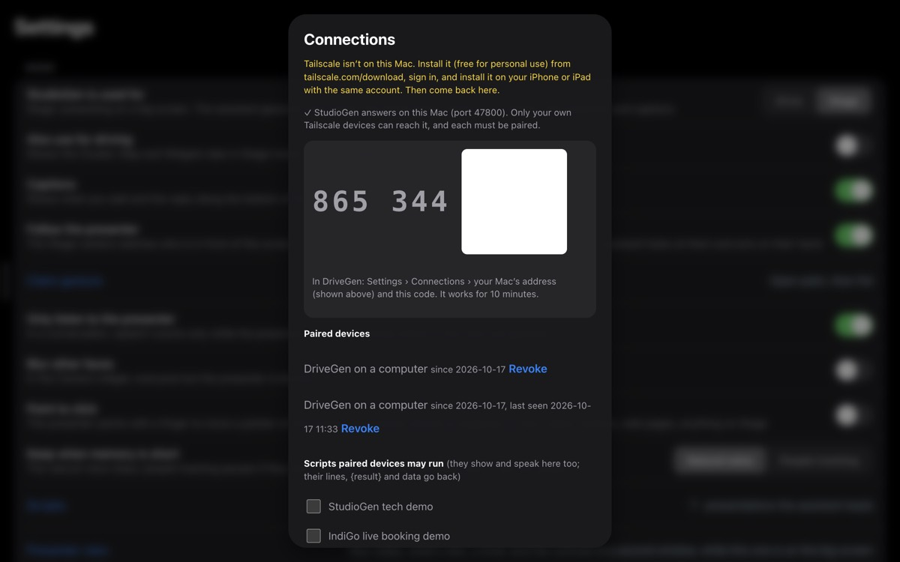
Messages are end-to-end encrypted. They travel through public relays (which only see noise) and switch to a direct link between the devices whenever the networks allow. More in Connections.
Getting around
- The dock (left in landscape, bottom in portrait): the clock, the connection, your three latest apps, the mic and the Home button (the grid of apps).
- Agent (the star): the results of what you ask. It’s first on DriveGen’s home grid; StudioGen has it too.
- Start page (StudioGen): the assistant, what the app does and cards to start presenting, open scripts, the Mesh or Connections. Drag the window by the strip along the top. The ⚙ top right changes the character and its size; drag the character to move it. The handle on the left slides the dock in.
- Dashboard: dials, a map or pages of widgets (see the dashboard).
- Settings: tabs along the top (swipe them sideways on a phone). Choose what opens first in Settings › Start screen: Start page, Agent or Dashboard.
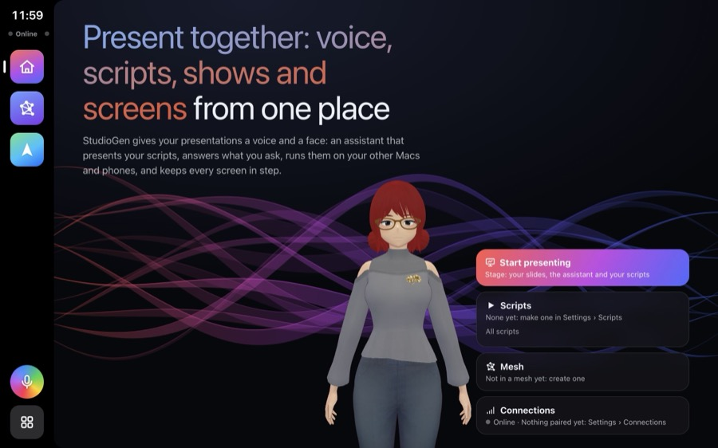
Talking to it
Tap the mic and speak, or type in the Agent screen’s box (not while driving). It answers aloud and shows the reply in the listening strip.
- Commands: about a hundred, from
take me home
tonext slide
. All are listed, switchable and editable in Settings › Voice › Voice commands, where you can also add your own: what you say (with{words}to catch), and what happens (an action, an app, a shortcut, a reply). - By meaning: if nothing matches, the language model on the Mac works out what you meant (
is it going to pour later?
gives the weather). Phones ask their Mac. Settings › Voice › Understand commands by meaning. - “Did you mean…?”: when it’s unsure it asks; say
yes
orno
. - Conversation mode (Settings › Voice): tap once and keep talking; you can interrupt it. Say
that’s all
to finish. - The reply voice: Automatic uses the natural voice, Phonon, on the device (fast on phones, tablets and Macs), or the device’s own voice where Phonon can’t keep up or for languages other than English. Choose female or male, or any of Phonon’s 25 English voices by name in Settings › Voice › Natural voice; Check the voices times them. Kokoro, the earlier voice, is an optional download there.
- Keep speech on this device: speech is never sent to Apple’s or Google’s servers; recognition runs on the device instead.
The agent: tasks for you
On a Mac (or any wide screen) the assistant stands on the left of the Agent screen, beside your cards; while a task is watched, the watch panel takes the right and the cards stay between them.
Ask for a task in your own words and the agent does it, most often on your Mac, and shows the result as a card. Tasks that send, book or post always ask first. The newest results are cards; everything older (tasks and scripts that ran) goes on the timeline below them: tap one to hear it again, ▶ to run it again. If your Mac is offline, the request waits (🕓 on the card) and runs when it's back: 10 minutes by default, per kind in Agent › Library › Settings › Waiting requests.
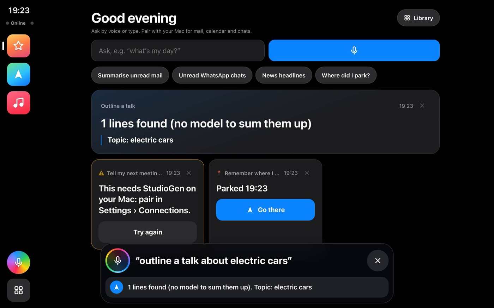
What you can ask (first set)
| Area | For example |
|---|---|
| Mail (Outlook on the web) | summarise my unread mail· anything urgent in my mail?· read the mail from Priya· mails about the Acme deal· find my PNR in my mail· email Rahul saying the deck is ready· reply to Priya saying I’ll call at five |
| Calendar (Outlook on the web) | what’s my day?· what’s my day on 2nd Nov?· my meetings tomorrow· when is my next meeting?· brief me for my next meeting· add team lunch to my calendar tomorrow at one· I’m running ten minutes late |
| Messaging (web) | any Teams messages?· what did Priya say on Teams?· tell Priya on Teams I’m on my way· any Slack mentions?· post in sales on Slack the numbers are out· any WhatsApp messages?· WhatsApp Mom saying I’m on my way |
| Presenting | present the keynote· outline a talk about electric cars· what can I present? |
| Web | flight status of AI 101· news about electric cars· look up the population of Pune· price of a MacBook Air |
| Car | commute brief· remember where I parked· where did I park?· navigate to my next meeting· when do I arrive?· WhatsApp Mom my ETA· take a note: call the bank |
Set up once on the Mac
- Agent › Library › Agent browser (sign in): sign in to Outlook, Teams and Slack, and link WhatsApp Web with your phone. The browser keeps you signed in; close it with Done. If a task finds a sign-in page later, its card says so and opens the browser.
- Agent › Library › Settings: choose work or school Outlook (outlook.office.com) or personal (outlook.live.com).
- Agent › Library › People: names you say, with an email (mail and Teams) and a WhatsApp number (with the country code).
While it works, it says a short line at once (On it. Give me a second.
) and the assistant types, then thinks, hand on chin; it answers with a gesture. In Drive mode only its face changes.
Asking before acting
For anything that acts for you, the agent says Shall I email Rahul: “the deck is ready”?
and shows Yes, Yes, always and No. Yes, always trusts that task from then on; take it back with Ask first in the Library.
In the car
While you drive, cards show at most three short lines and are read aloud; tap a card to hear it again, or Go there on a card with a place. Missing details are asked for (From whom?
). Mail, calendar and chat tasks run on your paired Mac, so it needs to be awake with StudioGen open.
Your own tasks
Agent › Library › + New task: give it a name and the ways you’d ask (one per line; words in braces become details it fills in, e.g. check order {order}). Then what it does:
- Read a web page and answer: a web address (it can use your details, e.g.
https://shop.example/orders/{order}) and what to tell you. On the Mac it can use your signed-in sites. - Run tasks in order (a composite): pick tasks; each result shows as its own card.
Run my Monday
could be your day, urgent mail and the weekly script. - Run one of my scripts, or steps as JSON for anything else.
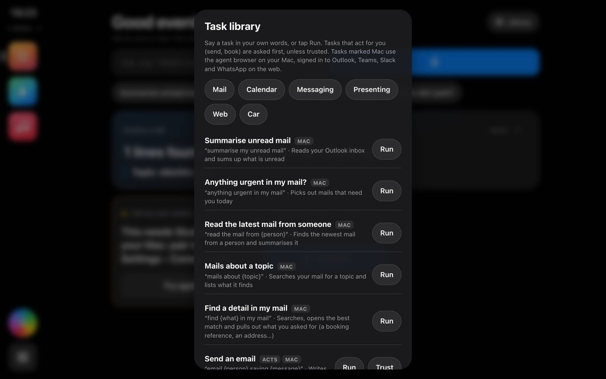
Answers are read aloud as the headline and up to five items (three while driving), each as who and the gist, then how many more are on the card. Going to another screen lets the reply finish; ✕ or Escape stops it.
Watchers: tell me when something changes
The full watchers guide, with picturesdocs/watchers-guide.html: every template, how you're told, filters, actions, the change history, and what to do when something goes wrong.
A watcher checks something on its own, again and again, and tells you only when there's news. Agent screen › 👁 Watchers (or Settings › Assistant › Watchers) › + New watcher: pick what to watch (new Slack mentions, a channel, someone's messages; new Teams chats; new mail, from someone, about something; new WhatsApp messages; your X timeline, an account, a search, your mentions; a web page changing, or words appearing on it), answer its question, choose how often (from live, every 30 seconds with the page kept open, to once a day), and Check and save: it reads once so it knows what's there now. Watch something on a page opens the page in the agent browser; tap the list, price or text to watch and choose when to be told (new items, it changes, a number crosses a line, words appear, it appears or disappears). A task's card has 👁 Watch this: the task runs on its own and its new items are told.
News comes as a 👁 card on the Agent screen and the timeline, a quiet notification, the voice when it's important (with Only tell me if… the language model decides whether it matters and whether to say it aloud), and the day's digest at 18:00. Quiet hours (22:00–07:00) keep notifications and the voice off; cards and the digest still come. A watcher that finds itself signed out pauses with a Sign in card; sign in, tap Check now. Watchers run on your Mac in the agent browser, with your sign-ins, and always leave a slot free for what you ask.
On a Worker: with a Worker in your mesh (Mesh › Workers), the watcher form has Runs on: the Worker is always on and keeps its own sign-ins (sign in there with Sign in from here, also on a watcher's sign-in card). The Watchers list shows where each runs; Check now, Pause and Delete reach it. On your phone: news also comes to your DriveGen as a card; when the phone is away, StudioGBee sends a notification (“a watcher found something new”, nothing more). Live watchers notice a change within seconds. If a site moves things around, a watcher picked by tapping finds the part again another way (🩹 in the list); if it can't, its card says Pick it again.
Tasks that use web pages run in the agent browser on your Mac. Sign in there once per site (a task that finds a sign-in page stops and opens it for you); sign-ins are kept when StudioGen restarts or updates. Agent › Library › Settings › Containers and sign-ins works like Firefox containers: each container (Default, Work, Personal, or your own) keeps its own sign-ins, so a work and a personal account of the same site can both stay signed in. Put sites in a container (one a line, outlook.office.com); Sign in… opens the container on its first site; Forget sign-ins signs out of everything in it. A task can also name its container in the editor.
Make and fix tasks
Settings › Scripts & tasks › Agent tasks lists every task with ▶ (run it and watch), Edit and, for your own, Delete. The editor has the name, the ways you ask (words in {braces} become inputs, with the question asked when one is missing), whether it acts for you, whether it runs on your Mac and whether it is shared in your mesh, and the steps as cards (open a page, wait, click, type, press a key, read part of the page, make the answer card, run another task, pause, stop, say). Teach me opens the agent browser: do the task once, clicking and typing as you would; tap Read this part on what the agent should read, then Done; it asks what to tell you and which words you typed change each time. Test (watch) first asks for the inputs’ values in a form (filled with the test values you keep beside each input in the editor, changed there or in the form), then runs it in the side panel so you see each step; ▶ in the list does the same. Editing a built-in task makes your own copy; Reset brings the original back.
Build tasks by describing them
On Stage, say help me build a task
: the assistant asks a few questions (answer by voice, person is Priya
, or type in the card beside it), reads out the plan, checks it on the real pages and runs it for you; say save it
. Choose the AI that writes it (Claude, a command-line AI such as Claude Code, an open-weight model in Ollama, IBM Bob, or the Mac's own model) in Settings › Scripts & tasks › Build with an LLM, where Build a task does the same by typing. Or Copy the prompt into Claude (or another LLM), answer its few questions (person is Priya Nair
), paste its JSON back and Import; Check it now tries each step on the real pages without sending anything, and Show me fixes a step by pointing at the right thing. On a Mac you can also type what the task should do and press Plan it: Apple's on-device model builds it from tasks that already work. To try things safely, tick Agent › Library › Settings › Use the practice sites (a made-up inbox, Slack and WhatsApp). Details: the guide.
Something not working? Settings › System › Debug log: turn it on with the key you were given, repeat the problem, then send the log from Settings › Logs (Share or Copy). It never records keys or passwords.
In the car
- Navigate:
navigate to the airport
,take me home
, or search in Maps. Turn-by-turn prompts, speed limits, rerouting. Tap ☆ on a place to save it as Home or Work. - Views: Map, 3D, AR (the route on the camera view) and HUD (big arrow; Mirror for a windscreen reflection). Say
AR mode
or use the mode button. - Nearby:
find parking
,find a charger
, fuel, coffee, food. - Calls and messages: add your contacts in Settings › Phone & apps › Contacts;
call Ravi
,text Ravi saying running late
. Messages are read aloud and hidden while moving. - Music and radio:
play Radio Mirchi
,play Believer on Spotify
. Radio pauses while you talk to the assistant. - Camera: the Camera widget recognises people, cars, bikes, animals and signals on the device; optional spoken alerts;
what do you see?
. - Hide while driving keeps distracting screens away above walking speed; in Drive mode the assistant only changes its face, no arm movements.
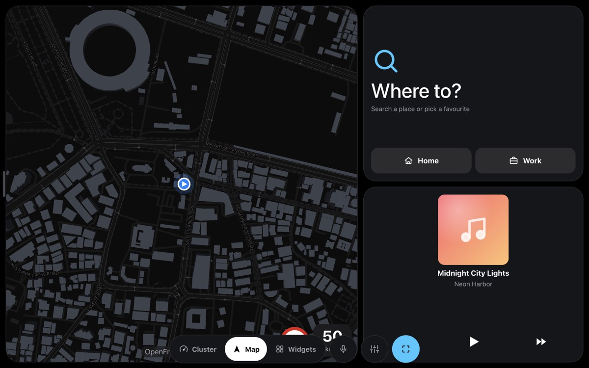
The dashboard and widgets
- Three layouts (swipe or use the pill): Cluster (eight dial styles), Map, and Widgets (pages of widgets).
- Edit: add, remove, reorder and resize widgets with the corner handle; add pages; stack widgets beside or inside the cluster. The camera and 3D widgets can float over the rest.
- Widgets: speed, trip, route, next turn, weather, calendar, clock, now playing, compass, roll, pitch, elevation, G-force, radio, the Assistant (your conversation by day), camera, data (table and chart), and documents, videos, web pages and 3D models (each as many times as you like; tap ⚙ in Edit).
- Documents: PDF and PowerPoint (with speaker notes), Word/Excel/SharePoint by link.
next slide
,go to slide 5
. - Customise (sliders button): dial style, accent colour, sensors. Dark and light themes, wallpapers.
- Widget links (Settings › Dashboard › Widget links): when something happens, do something (e.g. when I arrive at the office, stop the radio).
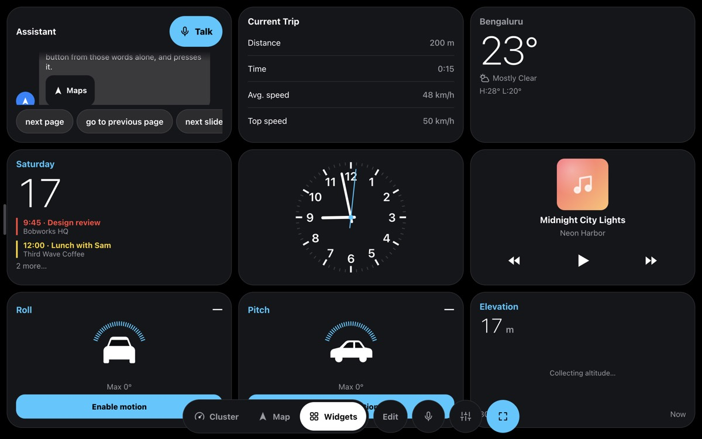
Stage and the assistant (presenting)
Settings › Mode › Stage (or say stage mode
): your content large on the left, the 3D assistant and any widgets on the right, captions along the bottom. A clicker or the arrow keys turn slides.
- The assistant talks with lip-sync, blinks, looks at you and gestures (about 45 motions: wave, point, present, explain, think, typing, thumbs up…). Choose the character in Settings › Assistant › Avatars (Elle, Vita, Victoria, Kiko, Noir, Ren, Seed-san, Maya, Leo, or your own .vrm).
- Capture a motion (Settings › Scripts › Assistant motions): stand in front of the camera and the assistant copies you; record a few seconds and it joins the motion library.
- Follow the presenter: whoever shows the claim gesture (open palm, then fist) becomes the presenter; the assistant looks at them and takes their hand gestures. Point and pinch to click.
- Gesture to start listening (Settings › Stage › Gesture to start listening): the presenter holds it (point up ☝, 🤟, ✌, 👍 or 👎) and the microphone opens as if they tapped it, cutting off a reply that’s playing; the same gesture again closes it. No conversation mode needed.
- Presenter view: a second window with notes, what’s next, a timer and big controls. Present on (menu bar) puts StudioGen full screen on the TV and the presenter view on your screen; Esc ends it.
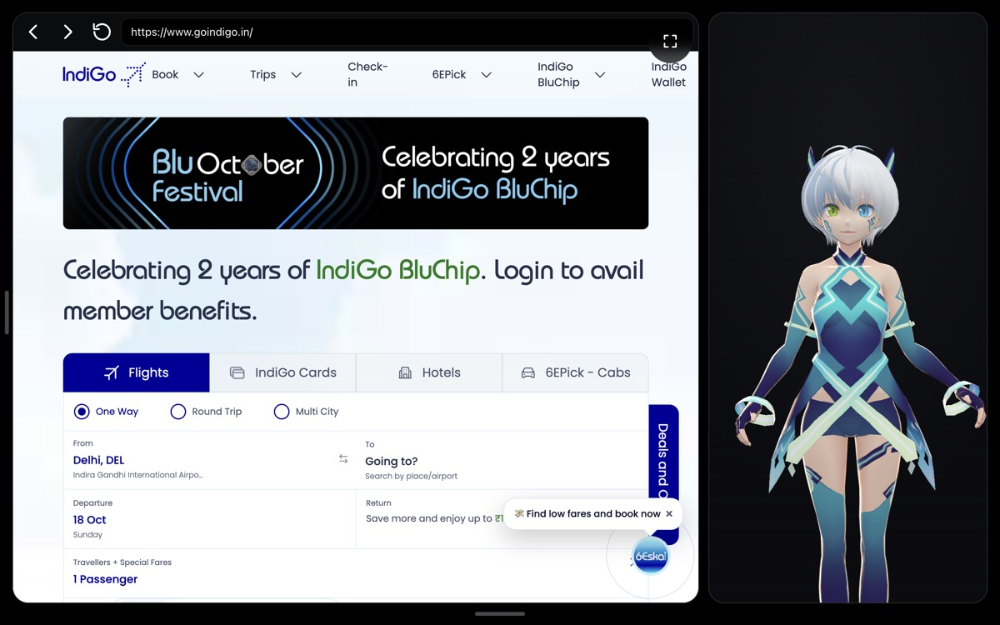
Cards while presenting
On Stage, anything a command opens (the weather, messages, music, a map, “what can I say”, an agent result) appears as a card over your slides, so the presentation, the assistant and the camera carry on. Say close card
or tap ✕; the card also closes when the script moves on. Private things (messages, calls, calendar, mail and chat results) appear only if Settings › Stage › Show private things on screen is on; otherwise the answer is only spoken. In DriveGen the same cards appear while you’re on the Agent home screen; elsewhere screens switch as before.
Scripts
Step by step, with every step and recipes for harder cases: the scripts and tasks guide.
A script has the assistant lead a presentation or a demo, step by step. They live in Settings › Scripts, the same place as always.
- New script opens the editor: a timeline of steps, each with Show (what happens on screen: slides, pages, widgets, actions), Say (the assistant’s line, face and motion;
{notes}reads the slide’s speaker notes) and Next (clicker, a phrase like “next”, a hand gesture, a pause, an app event, or a jump). New steps come from a three-question wizard. - Record a new script: use the app as you will in the demo; your clicks, typing and drags become the steps, replayed with a gliding pointer.
- Use the app like a person (steps in the group Automation): click a button by its words, type into a field by its label, press keys, scroll, drag, choose in a dropdown, tick a box, wait for something to show, read what it says, in StudioGen or a page of its agent browser. On Stage a pointer moves to each one first. It's the same engine the apps are tested with (MuseTester).
- Record web steps: clicks and typing on a web page, replayed on cue. Passwords, card numbers and one-time codes are never recorded.
- Interactive scripts: no timeline; the assistant listens and does what you ask from its list, until you say you’re done.
- Logic: remember values, if/else, repeat, for each, and background jobs that report when done.
- While a script runs:
next
,go back
,back two steps
,start over
,stop the demo
, or tap the step dots. - Sharing: ⬇ exports a bundle with everything the script uses; Import and Library bring them in.
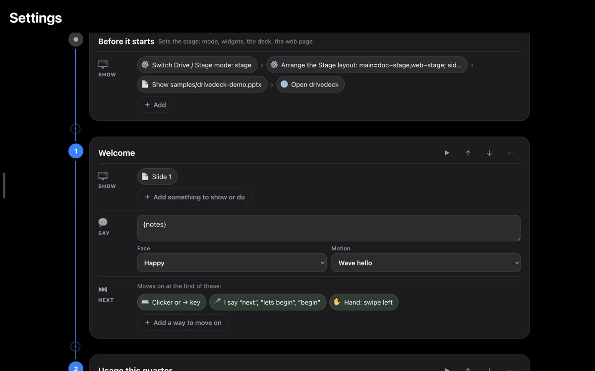
Tasks, data and web pages on the Mac
- Tasks on this computer: script steps can run AppleScript, a Shortcut or a shell command (open an app, notify, draft an email, battery and disk…). Each piece of code shows itself and asks once before it runs; Settings › System › Tasks you always allow.
- Data: the data widget shows a CSV/Excel export or JSON as a table and a chart; scripts load, chart and summarise it.
- Web page widgets are real browsers on the Mac: any site, signed in, with back and forward. Site helpers add your own CSS/JS to chosen sites (for example to hide cookie banners before a demo).
Connections
Settings › Connections on both apps.
- Pair once (above): from anywhere, no account. Encrypted messages through public relays, a direct link when the networks allow.
- Connect directly: same Wi-Fi or the Mac on the phone’s hotspot, codes shown both ways, nothing in between.
- Tailscale: if you already use it.
- Secret phrase: an extra secret typed on both devices; Change secret now or on a schedule; Revoke a device on the Mac.
- Test the connection: this network, every relay, the other app, a verdict. Say
test the connection
. - From the phone:
run the sales summary on my Mac
runs a script the Mac offers (tick them in Connections), and the answer comes back to the phone.
The Mesh and shows
Several StudioGens and DriveGens as one team (StudioGen › Mesh).
- Create a mesh, then Invite (a code or QR); paired phones join by themselves.
- Live: who is connected to whom and how, what each is running. Devices: roles and permissions. Activity and History (a week, with replay and export).
- Shows: one script across screens, in steps (every screen moves together) or in tandem (each runs its own part, waiting for your cues). From the phone:
start the keynote on all screens
,next on every screen
,stop the show
. A small badge shows on every screen while a show runs. - Shared: scripts and motions from the mesh; mark yours private if they shouldn’t be shared.
- Your sign-ins stay yours: tasks that use your mail, chats, calendar or Mac (anything you sign in to) run on your StudioGen only for your own devices: those paired with it, and those you tick Yours in Mesh › Devices (kept on that Mac, so no mesh owner can change it). Shared tasks that need no sign-in, such as a web search, anyone in the mesh can run there by just asking (
title of the mesh page
); untick shared tasks for a device to stop it. - From afar: on your phone, a task card that stopped at a sign-in has Sign in from here: the Mac's agent browser shows live, you tap and type, then ask again (same network). Mesh › See its screen does the same for the whole StudioGen; that's how a StudioGen Worker (StudioGen in Docker,
worker/README.md) is set up and signed in. - Workers (Mesh › Workers): more StudioGens of yours that run by themselves, with their own sign-ins (a second WhatsApp, a work account) and tasks running side by side, all using the Mac’s language model. + New Worker: in OrbStack (StudioGen installs it if needed; free for personal use), light on this Mac (nothing to install), or on another machine (a command to paste). Sign in to one with Sign in from here; Stop, Start, Update, Remove from the same list.
- StudioGBee (optional): an always-on place your team runs (one Docker command,
bee/README.md). Add it in Settings › Connections › StudioGBee; then a request for a Mac that is offline waits there and the answer arrives even if you closed the app; on DriveGen tap Notify me when an answer is ready (from the Home Screen app). StudioGens back up their tasks and scripts there. Mesh owners see the activity on its dashboard (Dashboard code, then a passkey). It only ever sees sealed messages.
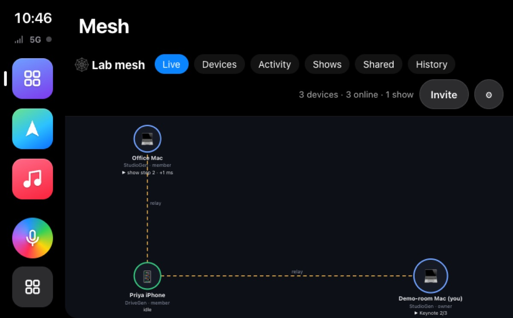
Settings at a glance
Settings has six tabs (swipe them sideways on a phone). The guide names the group inside a tab, e.g. Settings › Voice is the Voice group on the Assistant tab.
| Tab | Groups and what’s there |
|---|---|
| Assistant | Assistant: language model (this Mac’s, your Mac’s, or Claude; each job on its own), prompts (read and change them), avatars, the start-page greeting · Voice: speech recognition, keep speech on this device, reply voice (Automatic, device, natural), check the voices, voice commands, conversation mode, understand commands by meaning, act after you stop talking |
| Stage | Mode (Drive or Stage) · Presenting: captions, presenter view, follow the presenter, claim gesture, point to click · Cameras: which camera per mode |
| Drive | Dashboard (widget links, radio stations) · Driving (hide while driving) · Navigation (routing, TomTom key, Home and Work) · Phone & apps (contacts, music app, shortcuts) · Camera & objects (recognition model, alerts) · Location. On StudioGen this tab shows when you turn on the drive settings. |
| Scripts & tasks | Scripts, assistant motions, recordings, site helpers, screen understanding, the library address |
| Connections | Pairing, relays, direct link, test the connection, secrets, devices |
| System | Display (start screen, theme, wallpaper, units, seamless widgets) · System (updates, start at login, tasks you always allow, download everything for offline use) |
Privacy and safety
- Recognition, the reply voice, the camera’s recognition and Apple’s model all run on your devices. Speech goes to Apple’s or Google’s servers only for languages that can’t be recognised on the device, and never with Keep speech on this device.
- Messages between your devices are end-to-end encrypted; relays only pass on noise.
- Sign-ins in the agent browser and web widgets stay on your Mac. Passwords, card numbers and one-time codes are never recorded or typed by the app.
- Tasks that act for you ask first; Mac tasks show their code before the first run.
- In the car: short cards, read aloud; distracting screens hide while moving; the assistant doesn’t gesture in Drive mode.
When something goes wrong
Memory: the assistant remembers things about you across days: what you tell it (remember that Priya is my manager
) and what it learns from conversations (people, places, how you like things, plans with dates; temporary ones expire). It uses them when you talk (where am I this week?
). What do you remember about Priya?
, forget that
, forget about Gold
; everything in Settings › Assistant › Memory (edit, pin, forget, forget everything, off). It stays on your Mac, locked with its Keychain; your phone uses your Mac's. Passwords, codes and card numbers are never kept.
Answers come as cards: asking for the weather (or another screen) never leaves the screen you're on: a card pops up (on the Agent screen, a result card in the list). Tap a screen's icon to open it in full. The camera widget has its own Camera off button (and “camera off”, “camera on”): off stops the camera, people tracking too, and the widget stays put.
The weather is for the wrong place? Without location it shows your place: set it in Settings › Location › Your place (type your city), or turn on location. The weather screen and the spoken answer say which place it is.
Turned down the microphone, speech recognition or the camera by mistake? The next time something needs it, the app says so and offers Ask me again (StudioGen asks the Mac to ask again) or Open System Settings; DriveGen offers Try again with the steps for your browser or iPhone. Any time: Settings › System › Permissions.
| What happens | Try this |
|---|---|
| StudioGen doesn’t respond to clicks | Fixed in the 23 Oct update (the start page was one big window-drag area). Use StudioGen menu › Check for updates…, then quit and reopen. |
| No spoken reply on the iPhone | Settings › Voice › Check the voices (the tap lets iOS speak), and keep the reply voice on Automatic. |
| A mail or calendar task says “sign in” | On the Mac: Agent › Library › Agent browser, sign in, Done, ask again. |
| “I can’t reach your Mac” | The Mac must be awake with StudioGen open and online. Check the dock corner and Settings › Connections › Test the connection. |
| The phone forgot the pairing | Safari and the Home Screen app have separate storage: pair in the Home Screen app. |
| A task acts without asking | It was trusted: Agent › Library › Ask first. |
| Something else | Settings › tap the version row 7 times for the Logs tab (it needs a key from the team) and share the log. |
Things you can say
Driving
take me home
· navigate to Costco
· what’s my ETA?
· find parking
· AR mode
· stop navigation
· call Mom
· read my messages
· play the radio
· what do you see?
The agent
summarise my unread mail
· what’s my day?
· brief me for my next meeting
· any WhatsApp messages?
· email Rahul saying …
· flight status of …
· where did I park?
Presenting
stage mode
· next slide
· go to slide 5
· go back
· start over
· stop the demo
· present the keynote
Devices
who’s around?
· run the sales summary on my Mac
· start the keynote on all screens
· next on every screen
· test the connection
The full list, with on/off switches and your own additions: Settings › Voice › Voice commands. Agent tasks: Agent › Library.
Watchers
Be told when something happens: messages, mail, prices, your route, pages, folders.
Open on its ownA watcher keeps an eye on something for you (new mail, a chat, a price, a page, a folder on your Mac) and tells you only when there's news. It checks on its own, again and again, and stays quiet the rest of the time.
What a watcher is
Think of a watcher as an agent task that runs on its own schedule. It reads something: a list (mail, chats, posts), part of a web page, a price, a feed, a folder on your Mac, or a window. It compares that with what it saw last time. When something new or different turns up, you get a 👁 card on the Agent screen, a quiet notification, and, when it matters, the assistant says it aloud.

Your first watcher, in a minute
- On the Agent screen, tap 👁 Watchers, then + New watcher. (Also in Settings › Assistant › Watchers.)
- Pick what to watch. Templates are grouped: Slack, Teams, Outlook, WhatsApp, X, Web pages, Shopping, Travel, Work, Life, News and money, Media, On this Mac.
- Answer its question (a product's address, a person's name, a channel…), choose how often and how to tell you.
- Tap Check and save. It reads once to learn what's there now, so it won't tell you about things that were already there.


More ways to make one
Say it
Say (or type) what you want: tell me when the price of [a product's link] drops below 12000
, keep an eye on the news about Acme
, let me know when bitcoin goes above 90 lakh rupees
, notify me when ollama/ollama has a new release
. The assistant drafts the watcher and asks before saving it. Say yes and it reads once, as above. If it's missing something (which person? which page?), it opens the form instead.

Tap what to watch on a page
Open any page in the agent browser and tap 👁 Watch something here in its bar (or + New watcher › Watch something on a page and give its address). Tap the part to watch: a list, a price, a status, a paragraph. StudioGen suggests the kind from what you tapped (a list: new items; a number: a price; text: changes). You choose the line (below 11000, drops 5%) or the words.


Teach it (pages behind a search or a tab)
+ New watcher › Teach it: the agent browser records what you do (type a search, open a tab), like Teach me for tasks. Then tap Watch this part in the bar and tap what to watch. Each check repeats your steps first. Password, payment and one-time-code fields are never recorded.
From a task's card
A task's result card (one that only reads, like “Unread WhatsApp chats”) has 👁 Watch this. The task then runs on its own (every 30 minutes to start with), and you're told when its answer has something new. You can see this button in the picture under And then: actions.
Paste one
+ New watcher › Paste a watcher takes a watcher as JSON: one a friend copied with Copy as JSON, or one an LLM wrote from the build prompt (Settings › Scripts & tasks › Build with an LLM has a watcher section). Watchers shared in your mesh arrive the same way (paused until you turn them on).
Example: new messages from one person (Varun)
Two ways, both on WhatsApp Web here (the same works for Slack, Teams or Outlook). Sign in to WhatsApp in the agent browser once first (Agent › Library › Agent browser; link your phone).
Way 1: tap his chat in the list
- Open WhatsApp in the agent browser and tap 👁 Watch something here. A bar says what to tap, with Cancel; what's under the pointer is outlined in red.
- Tap Varun's chat in the list. The form already says new items appear in a list, Only items with these words: Varun, and names it New from Varun.
- Check and save. It watches the whole chat list and tells you when a new row has Varun in it, which is a new message from him. (A group whose latest message mentions “Varun” also matches; Way 2 avoids that.)


Way 2: Teach it to open his chat, then watch the messages
- + New watcher › Teach it, address
https://web.whatsapp.com/, Start. The bar says Teaching. - Click Varun's chat, as you would. It's recorded as “open the chat named Varun”, not “the first chat”, so it finds his chat wherever it is in the list.
- Tap Watch this part in the bar, then tap one of his messages. The form says new items appear in a list and names it New in Varun.
- Check and save. Each check opens Varun's chat and tells you about each new message in it, including ones you'd miss in the list (several in a row).


Which to choose? Way 1 is lighter (one page, no clicks each check) and sees his latest message without marking it read. Way 2 sees every message in his chat, but marks them read. With either, add Only tell me if… (for example he needs an answer today
) or Say it aloud: Always in Edit.
On the road: lookahead, a faster way, leave by, and more
Four watchers in + New watcher › On the road read Google Maps on your Mac (design: maps-watchers.html):
- Lookahead: traffic and what's on the way: every 5 minutes, from the start you chose and, once your phone is on the way, from where you are. It tells you when traffic adds 5 minutes or more, when it eases, when today is slower than your usual time for the trip, and what's happening on the way: accidents, jams, road works, closures, diversions, VIP movement, protests, strikes, processions, crowds, flooding, fallen trees, the weather. With each, the other way and its map. Works in any city.
- A faster way: when another route saves 5 minutes or more: “A faster way to Whitefield via NH44 saves 6 min”.
- Be there by a time: a trip you make on certain days (“work by 9:30 on weekdays”): “Leave by 8:52 for work at 9:30 (38 min with traffic)”, then “Leave now”.
- Leave by: your next meeting with a place (from your calendar), the drive from home, work or where you are, with traffic: “Leave by 2:10 for Acme review at 3:00”, then “Leave now”.
How it knows where you are: while you drive, DriveGen sends your position and where it's navigating to your own Mac every 30 seconds (sealed, own devices only, not kept; turn it off in DriveGen's Settings › Location › Tell my Mac where I am while driving). Set your Home and Work there too, for leave-by. The news comes back to your phone as a card and is said aloud; Open in Google Maps on the card opens the route.
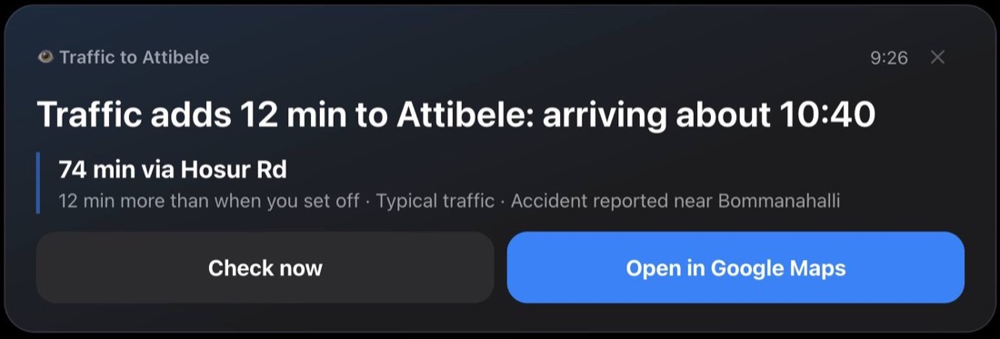
Looking ahead
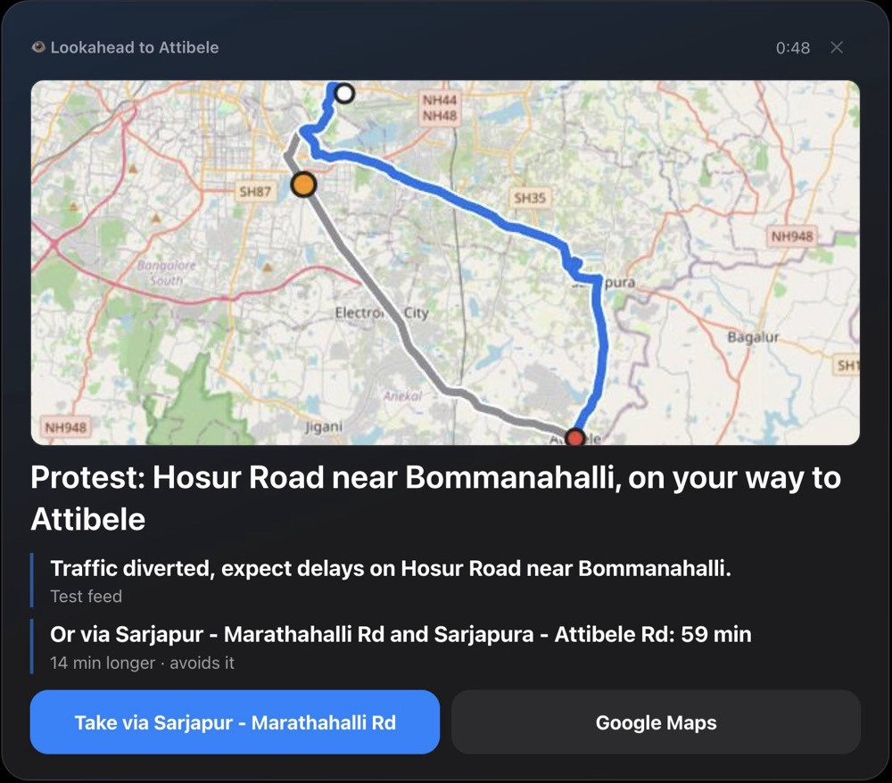
Besides Google Maps, the lookahead watcher reads the news (Google News in your country and language, and GDELT), posts on Reddit and on X (sign in to X in the agent browser for X), the weather at the start, middle and end of the drive, and your own feeds (your city's traffic police, say: paste its RSS address in the watcher's form). The language model picks out what is about your drive: a road or area on it, or a place within about a kilometre of a route. It tells each thing once, with its source.
Take it: on the card, or say yes when your phone asks “Take Sarjapur Rd?”. If DriveGen is navigating, it re-routes that way; otherwise Google Maps opens and navigates that way.
In the watcher's form, Look ahead turns each source on or off. Last check shows what it read and found, for example looked ahead: Google News 40 · Reddit 6 · X: sign in to X in the agent browser to add posts and ahead: Protest near Hosur Road (City Times, new). The first check of a drive takes about a minute (it reads each route's turns); later ones a few seconds.
Along the way: fuel, the weather, the next town
Three more in + New watcher › On the road, for while you drive (they start once your phone is on the way):
- Fuel or charging on the way: petrol or diesel, CNG, or EV charging, found along the route ahead on Google Maps, with ratings and whether they're open. It tells you before a long stretch without one: “Last petrol pump for a while: HP, 3 km, 4.2★, open 24 hours” and “Next after that: 38 km”. Choose the least rating, how long a gap to warn about, and whether to hear the nearest one too.
- Weather ahead: the weather where you'll be when you get there: “Heavy rain where you'll be in about 30 min (near Hosur)”.
- Next town: about 15 minutes ahead: “Coming up: Hosur, about 15 min”, a line about it from Wikipedia, the weather there now, and a local headline.
Weather ahead also tells you about poor air on the way (AQI above 150: keep the windows up) and when sunset comes before you arrive. Next town also tells you when you're about to cross into another state or country. Fuel shows how many EV chargers are free when Google Maps shows it.
And more on the road
- Food at meal times on the way: at breakfast, lunch or dinner time, places rated 4★ or more (or what you set) near where you'll be: “Lunch on the way: Udupi Grand, 4.4★, 12 km ahead (about 15 min)”. Say what kind of food you like.
- Parking near where I'm going: about 15 minutes before you arrive, parking near your destination, open now, how far from it.
- 10 minutes away (tell someone): “9 min from Attibele: arriving about 3:42”, with a button that opens WhatsApp (to the number you set) or a message with “I'm about 9 minutes away from Attibele”. You press send; nothing is sent by itself.
- Speed cameras ahead and Toll plazas ahead: on the next 20 km (cameras) or 60 km (tolls), from OpenStreetMap, in any country. Google Maps doesn't give toll prices, so it names the plaza and how far.
- Tomorrow's drive, the evening before: between 18:00 and 22:00, for a trip you make tomorrow (where to, and when to be there): how long it takes at today's traffic, when to leave, the weather there at that time, and news of strikes, closures or events on the way.
Your phone says these between turns, never over a turn coming up, a call or a question; the nice-to-know ones (the next town, food, parking) at most every 4 minutes.
No Mac? When DriveGen is navigating and none of your Macs can be reached, it looks ahead itself with open data: the weather ahead, the next town, and the last fuel for a while (from OpenStreetMap, without ratings). Settings › Location › Look ahead myself when no Mac is reachable.
From, to and your own route rules
Each map watcher opens a form when you make it (and the same fields in Edit):
- From and To: tap a quick choice (Where I am, Where I'm navigating to, Home, Work, your saved places), or type any address or place and pick it from the list. The start can be anywhere, not just home or work.
- Avoid tolls and Avoid highways: Google Maps leaves those routes out.
- Avoid roadworks and closures: StudioGen skips a route Google marks with construction, a closure or an accident.
- Avoid roads and Prefer roads: roads or places, comma-separated (“Old Madras Rd, Silk Board”). StudioGen opens each route's turn-by-turn steps in Google Maps, so a road anywhere on the way counts, not just the one in “via”. A place Google doesn't name in the steps (a junction such as Silk Board) is found on the map and checked against the route's path: Last check says “Silk Board: on the way of Hosur Rd (180 m)”. A route with something you avoid is skipped; when every route has it, you're told about them all. A preferred road is told first when it is within a few minutes of the fastest. Google Maps can't do this. The steps are read once and kept for 12 hours, so the first check takes longer (up to a minute).
- Only on days and between times (for example weekdays 8:00–10:00): outside them the watcher rests.
Last check shows what it read, for example routes: 26 min via Outer Ring Rd · 38 min via Old Madras Rd [skipped: along old madras].
Places: 👁 Watchers › Places keeps Home, Work and any other places you name (“Gym”, “Mum's”). They are the quick choices in the form. In DriveGen they are also in Settings › Location, which is hidden in Stage mode; Watchers › Places works in every mode. Narrow roads aren't in Google's data, so that option will come later from OpenStreetMap.
The templates


| Group | Templates |
|---|---|
| Slack | New mentions · new messages in a channel · new messages from someone · a search · direct messages (the DMs tab) · replies in threads |
| Teams | New chats · new messages in a chat |
| Outlook | New mail · new mail from someone · new mail about something (words) |
| New messages · new messages from someone | |
| X | Your timeline · an account's posts · a search · your mentions (your own account, every 30 minutes to start with) |
| Web pages | A page changes · words appear on a page |
| Shopping | Amazon: price drop, back in stock · Flipkart: price drop, back in stock · any shop: price drop, back in stock (the language model reads the price) · a sale or coupon appears · a pre-order opens |
| Travel | Flight price · flight status and gate · appointment slots (visa, passport) · hotel price · train seat availability |
| Work | Calendar: a meeting moved, added or cancelled · GitHub items assigned to me · a GitHub build failed · a status page shows an incident · a competitor's pricing page changes · new reviews · a shared document changed |
| Life | Parcel status · tickets on sale · new apartment listings · new jobs on a careers page · school or society notices · results published |
| News and money | A topic or company in the news · a stock crosses a price · a crypto coin crosses a price · a government tender or circular · a software release |
| Media | A YouTube channel's new videos · a podcast's new episodes · a subreddit · a Hacker News mention · a blog's new posts (StudioGen finds its feed) |
| On the road | Lookahead: traffic and what's on the way · a faster way · be there by · leave by (my next meeting) · fuel or charging on the way · weather ahead · next town · food at meal times · parking near where I'm going · 10 minutes away · speed cameras · toll plazas · tomorrow's drive |
| On this Mac | New or changed files in a folder · a file changes · an app's window (words appear, or it changes) · a webhook · when another watcher has news |
Some templates (apartment listings, jobs, reviews, notices, tenders) open the page and ask you to tap one item, because every site lays its list out differently.
What it tells you about
| Tell me when… | Example | Told |
|---|---|---|
| New items appear in a list | New mail, a chat, a post, a file | Once per item. A row that only changed its time or unread count, or that you've read since, isn't new. With Also tell me what's gone or moved you also hear what disappeared, and a calendar meeting at a new time is told as moved. |
| Items disappear | A listing is taken down | Once per item |
| It changes | A policy page, a parcel's status | With the lines that changed: Now… / Was… (a clock or date moving doesn't count) |
| A number crosses a line, or moves | below 11000 · above 3000 · drops · drops 5% · moves 3% | A line: once when it crosses, again only after it has gone back. A move: each time it happens. |
| How many there are crosses a line | above 3 open tickets | Once when it crosses |
| Some words appear | in stock||available (|| between choices) | Once when they appear |
| A pattern matches | gate [A-Z]\d+ (for those who know regular expressions) | Once when it matches |
| It appears / disappears | A “Book now” button | Once |
| It looks different | A chart or a map (a small picture of it is compared) | When it differs by more than a set percentage (8% to start with) |
| Nothing has changed for too long | A status page that should update daily (minutes, e.g. 1440) | Once, until it changes again |
How you're told
👁 A card
On the Agent screen and in the timeline, with Check now and Watchers.
A quiet notification
A short note at the top, wherever you are. It never switches screens.
Said aloud
When it's important (the default), Always or Never, in the assistant's own voice: the 3D assistant waves, then speaks with its lips moving. Never while you're presenting or in a conversation.
On your phone
A card in DriveGen; when the phone is away, a notification through StudioGBee that says only “a watcher found something new”.
The daily digest
At 18:00, one card sums up what your watchers saw that day (written by the language model).
Quiet hours
22:00–07:00: no notifications or voice. Cards and the digest still come.
Only tell me if… (on every watcher's form): a rule in your own words, such as it's from a customer, or needs me today
or it's from family and sounds urgent
. The language model reads each piece of news against your rule, and what it remembers about you, and decides whether it matters and whether it's worth saying aloud. The rest is skipped.
Change the digest time and the quiet hours in 👁 Watchers › Digest and quiet hours.
When not to tell
In a watcher's Edit, under When not to tell:
- Ignore lines with: words that mark noise (an ad, a “last updated” line);
||between them. - Only from / Not from: people's names, for lists of messages.
- At most once per so many minutes: news in between is still recorded, but not told.
- Only after it holds for so many checks: no flapping when a price bounces around a line.
- While I'm presenting, keep it for later (on to start with): news waits until your presentation ends, then comes together in one card.

And then: actions
A watcher can do something when it has news (in Edit, under And then):
- Run a task: tasks that only read or tell run straight away. Tasks that act (send, reply, book) ask you first, as always. Inputs can carry the news:
{headline},{item},{detail},{value}. - Run a script: it asks first if the script can act on things (type, click, run a command on the Mac).
- Start a watcher: turn on another, paused, watcher.


Chains: the template On this Mac › When another watcher has news makes a watcher whose items are another watcher's news. Give it actions, or a rule of its own (“only tell me if…”).
The change history
Tick Record changes on any watcher (price templates have it on): every piece of news is written to a CSV file on your Mac (time, watcher, headline, value, items). Edit › Show history opens it in the data widget: a table, and a line chart when there's a value, like a price over the weeks.

The Watchers list and editing
👁 Watchers lists each watcher: when it last checked, how many items it saw, when it last had news, and when it checks next. Each one has Edit, Check now, Pause/Resume and Delete.


Changing what a watcher reads (its address, its part, its kind) gives it a fresh start: it reads once and tells you only about what's new from then on. Copy as JSON copies it to share. Share in the mesh offers it to your mesh; others get a copy that runs with their own sign-ins.
When something goes wrong
Signed out
A watcher that lands on a sign-in page pauses and leaves a card: Sign in opens that site in the agent browser (or Sign in from here for one running on a Worker). Sign in, then tap Check now; it carries on. A robot check is handled the same way.
The site moved things around
A part you picked by tapping keeps several ways to find it again. When the first stops working, the next one that works is kept (🩹 in the list). A watcher made from a template also tries that template's current way of reading the site, so fixes to the templates (when a site changes) reach watchers you made earlier, without recreating them. If none work, it looks for the part's words on the page, then asks the on-device screen model to find it. Then it asks you once:

If even that fails, the card says Pick it again.
App windows
Watching another app's window needs Screen Recording for StudioGen. The first time, StudioGen asks. If it was turned down, the watcher pauses with a card that offers Ask me again or Open System Settings (Privacy & Security › Screen Recording).
Finding out why
- Last check (in a watcher's Edit, and on the “Couldn't read it” sheet): each step of its last check in plain words, for example opened in 1.3 s, pressed Use here, which ways of finding the part matched and how many, how many it kept, news or nothing new, or where it stopped.
- Diagnose the page (Edit, the “Couldn't read it” sheet, or 🩺 in the agent browser's bar): saves the page's structure, with every word replaced by its shape (“Varun 10:05” becomes “Aaaaa 99:99”), and how each of its watchers' selectors fares on it, to a file in
~/Library/Application Support/StudioGen/diagnostics/. Nothing the page says is in it, so it's safe to send to whoever helps you fix a watcher. - 🔎 in the agent browser's bar: type a selector (
||between choices, orrows-in:#container) and see what it matches, outlined on the page, with the first lines. - The debug log, when it's on (Settings › System › Debug log), is also written to
~/Library/Logs/StudioGen/debug.log.
Checks that fail
A page that doesn't answer is tried again after 5 minutes, then 15, then an hour, never hammering the site. The reason shows in the list (⚠️).
Where they run
This Mac
In StudioGen's agent browser, with your sign-ins. It always leaves one of the 3 browser slots free for what you ask.
A Worker
With a Worker in your mesh (Mesh › Workers), the form has Runs on. A Worker is always on and keeps its own sign-ins. Its news comes back to your Mac sealed, and StudioGBee keeps it while the Mac sleeps. Check now, Pause and Delete reach it.
Your phone
DriveGen gets each piece of news as a card (untick On my phone too to stop). Settings › Assistant › Watchers there shows your Mac's watchers, with Check now and Pause.
After an update or a restart, watchers carry on by themselves: their first checks come within a minute, and what arrived while StudioGen was off is told then. Paused ones (signed out, say) stay paused until you act on their card. Closing StudioGen's window keeps it running in the menu bar, and watchers keep checking (a little less often while it's hidden); Quit (⌘Q) stops them. To have them running after you restart your Mac, tick Start at login in StudioGen's menu-bar menu (it then starts hidden, with watchers running).
Live (in How often) keeps the page open in a hidden browser. The page itself says when the watched part changes, so you hear within a few seconds instead of on a schedule. That costs memory, so keep live watchers for chats, or put them on a Worker.
Webhooks
On this Mac › A webhook gives you an address on your StudioGBee. Whatever another service POSTs to it (a form, a shop's order notice, a home-automation event, up to 16 KB) becomes a 👁 card within seconds, even if it arrives while your Mac is asleep (it's kept for a week). The address is shown in the watcher's Edit. Anyone with the address can post to it, so share it only with the service that needs it.
Things you can say
Make one
tell me when …
· keep an eye on …
· let me know when …
· notify me when …
· watch … for me
See them
what are my watchers
· what am I watching
· what did my watchers see today
Pause and resume
pause the Acme watcher
· stop watching Acme
· start watching Acme again
Privacy and manners
- Watchers read with your sign-ins on your own Mac or Worker. What they see, their history and their CSV files stay there. Only the news itself goes to your own devices, sealed.
- StudioGBee never sees what your watchers found. A phone notification says only “a watcher found something new”. Webhooks are the exception: what an outside service posts reaches the bee as it was sent.
- Watchers that act on things ask first. Password, payment and one-time-code fields are never recorded or typed.
- Be gentle with sites: checks have a little randomness, failures back off, and the X templates check every 30 minutes to start with. Some sites' terms don't allow automated reading; whether to watch them is your choice.
Watchers are part of the agent: see also The agent: tasks for you in the main guide, and the scripts and tasks guide for building your own tasks.
Scripts and tasks
Presentations the assistant runs, and jobs it does for you on websites; recipes.
Open on its ownHow to make, change and fix scripts (presentations and sequences the assistant performs) and agent tasks (jobs the agent does when you ask in your own words), with what each step is for, how to set it up and when to use it, plus recipes for the harder cases. Both are made in Settings › Scripts & tasks in StudioGen; tasks that use web pages run on your Mac.
Script or task?
| Script | Agent task | |
|---|---|---|
| What it is | Something the assistant presents or performs over time: slides, lines it says, gestures, web pages, recorded clicks | A short job: open a page, click, type, read, and give you an answer card that's read aloud |
| Started by | Its name (present the keynote), the list, the start page, a show on several screens | What you say, in your own words (read the mail from Priya); the words in braces fill its inputs |
| Moves on | Step by step: the clicker, a phrase, a hand gesture, a pause, an app event | All at once, start to finish (or one step at a time while you test it) |
| Ends with | The last step (or “that's all” in an interactive script) | A result card on the Agent screen, spoken |
| Good for | Presentations, demos, kiosks, rehearsed flows, guided sessions | Mail, calendar, chats, web look-ups, anything you'd ask an assistant for |
The practice sites
To try things safely, use the made-up sites in labs/practice/ (served by the app, and at https://vchahalibm.github.io/CarPWA/labs/practice/): inbox.html, a mailbox built like Outlook on the web; slack.html, a Slack with channels, direct messages, Activity (mentions) and a message box; whatsapp.html, a WhatsApp Web with chats, unread badges, search and a message box; teams.html, a Microsoft Teams with chats (one-to-one and groups, unread ones marked), Activity, search, a message box, and Teams' link for a new chat (?users=…&message=…). They use the same kinds of labels, roles and page structure as the real sites, so a task made on them carries over, and nothing you send leaves your browser (the people in them are made up). Signing in is simulated: Sign in with email (simulated) on Slack, Simulate scanning with your phone on WhatsApp, Next (simulated) on Teams. Add ?reset to an address to start over.
Tick Agent › Library › Settings › Use the practice sites and {outlook}, {slack}, {whatsapp} and {teams} point at them, so the built-in tasks and yours run there; untick it for the real sites. The recipes below were run on them; the pictures are from those runs.
Make a script
- Settings › Scripts & tasks › Scripts › New script (or Record a new script, below).
- The editor opens. At the top: Run, Save and More… (check it for problems, edit it as JSON, export it with what it uses, read how scripts work). How a script runs explains it in one page.
- Before it starts sets the stage once: Stage mode, the layout, the deck, the web page. These are replayed quietly when you go back, so the screen is right at every step.
- Each step is a card with three lanes, in the order they happen:
- Show: what happens on screen (chips: tap one to change it, + Add for more);
- Say: the assistant's line (
{notes}reads the slide's speaker notes), its face and its motion; - Next: what moves it on.
- The buttons on a step: ▶ try just this step, ↑ ↓ move it, ⋯ more (save its id, duplicate, delete).
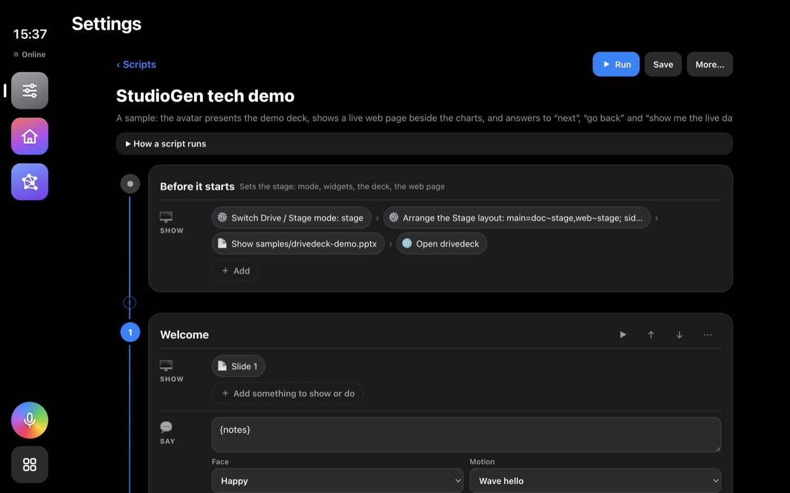
Add a step (the wizard)
Add a step (at the end, or ⊕ between steps) asks three questions:
- On screen: a slide, a web page, something done on screen (clicks and typing, added on the card next), or nothing new;
- The assistant says: a line or the slide's notes, with a face and a motion;
- Moving on: the clicker, a phrase, a gesture, after some seconds.
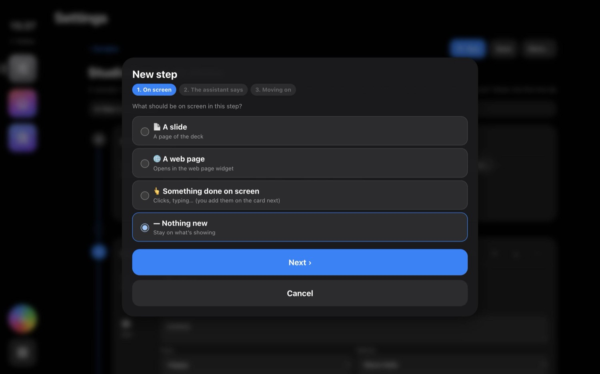
What a step can show or do
+ Add in a Show lane opens the picker. Each kind, what it's for and when to use it:
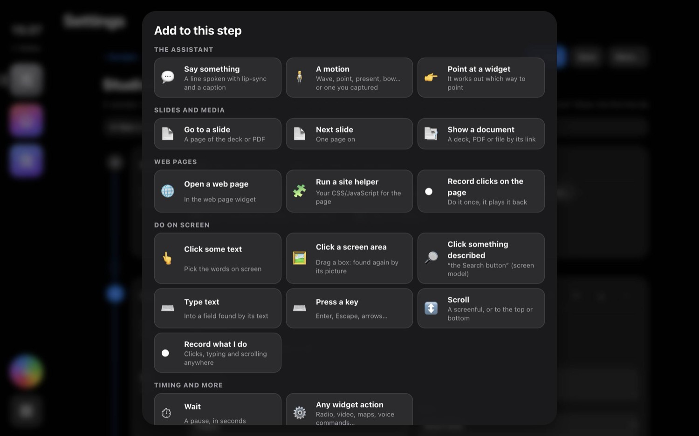
| Step | What it does | How | When to use it |
|---|---|---|---|
| Say something | A spoken line with lip-sync and a caption | Type the line; {notes}, {page} and your values like {name} are filled in | Narration between actions; reading a result (Revenue is {total}) |
| A motion | The assistant moves: wave, point, present, think, typing, bow…, or one you captured | Pick from the list | To draw eyes to something, greet, react |
| Point at a widget | Points at a widget (the deck, a web page) from wherever it stands | Pick the widget | “Look at this chart” |
| Go to a slide / Next slide | Turns the deck or PDF | A page number (prefer this: going back lands right) or one page on | Every presentation step |
| Show a document | Opens a deck, PDF or file by its link | Paste the link | Switching decks mid-show |
| Open a web page | Shows a page in the web widget | The address | Live demos, dashboards |
| Run a site helper | Your CSS/JavaScript on that page (hide banners, zoom) | Pick a helper (Settings › Scripts & tasks › Site helpers) | Tidying a site before the audience sees it |
| Record clicks on the page | Records clicks and typing on the web page, replays them with a visible pointer | Do it once; add as separate steps or one sequence | Demo flows on websites |
| Click some text | Clicks words on screen, anywhere in the app | Pick the words on screen | Buttons with stable labels |
| Click a screen area | Clicks a place found again by its picture | Drag a box around it | Unlabelled icons |
| Click something described | The screen model finds “the Search button” | Describe it (downloads Florence-2 once) | When the label changes but it looks the same |
| Type text / Press a key / Scroll | Typing into a field found by its text; Enter, Escape, arrows; a screenful or to the top/bottom | The field's label and the text; the key; how far | Forms, searches, long pages |
| Record what I do | Records clicks, typing, keys, scrolls and drags anywhere in the app | Do it, then Done | Complex app flows (resizing widgets, settings) |
| Wait | A pause | Seconds | Letting a page load or a point land |
| Any action | Everything else the app can do: radio, navigation, data, your Mac, agent tasks… | Pick from the action list | When there's no special card for it |
Moving on
The Next lane says what moves a step on; whichever comes first wins:
- The clicker or → (on by default) and a phrase (
next
, or your own words); - a hand gesture of the presenter (open palm, thumb up, swipe…; needs Follow the presenter);
- automatically, some seconds after the step is done;
- when something happens in the app (a video ends, a page changes, a route starts);
- a jump to another step instead of the next one.
Choices (+ in the Next lane › A choice) jump elsewhere on other phrases or gestures: show me the live data
→ the live-data step. While a script runs, go back
, back two steps
, start over
, repeat that
and stop the demo
always work, and the step dots on Stage list every step to jump to.
Record a new script
- Scripts › Record a new script.
- Use the app as you would in the demo: click widgets and buttons, type, press keys, scroll, drag, and click and type on web pages in web widgets. A recording bar stays on screen.
- Done. The recording becomes a script whose steps are your actions, with waits where you paused. Save it, or save and run it.
Interactive scripts
No timeline: the assistant greets you, listens, does what you ask from its list, and listens again until you say you're done. Scripts › New interactive script.
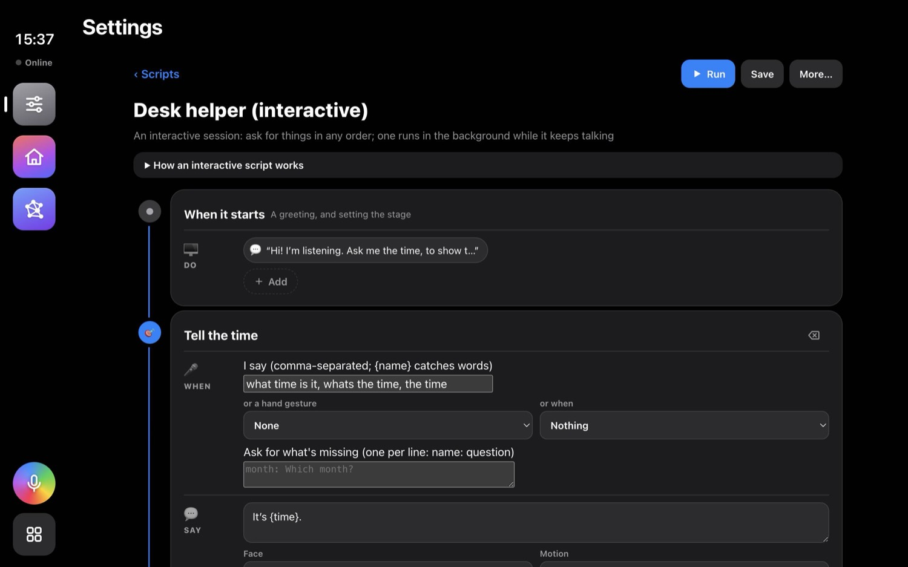
- Things it can do (intents): each has phrases (
show sales for {month}:{month}catches the words), an optional hand gesture or app event, a question for each missing word (Which month?
), what it says, and its steps. - When nothing matches: the fallback steps; with Understanding (Settings › Assistant) a language model picks the intent instead.
- Idle steps after some quiet, and end phrases (
that's all
).
Logic: values, if, loops, background jobs
Add these from + Add › Logic (Set a value, If…, Repeat, For each, Wait for a background step), or in More… › Edit as JSON. Any text in a step can use {name}; dots reach inside ({result.rows}, {card.items.0.title}); {time} and {date} are built in.
| Step | What it does | Example | When |
|---|---|---|---|
| Remember a value | Keeps a value (numbers stay numbers, JSON is parsed, {n} - 1 is worked out) | { "set": "n", "value": "3" } | Counters, gathering text |
| Keep what a step gives back | "as" on any action keeps its result; a failure goes into {name_error} | { "do": "brain.ask", "value": "…", "as": "answer" } | Using a result in the next steps |
| If | Runs then or else: == != > < is, contains, is empty, joined with and/or | { "if": "{n} > 3", "then": [ … ], "else": [ … ] } | Different paths |
| Repeat / until / for each | A number of times; until a condition; over a list ({index} counts, at most 1000) | { "each": "1, 2, 3", "as": "n", "steps": [ … ] } | Lists, retries, slideshows |
| Go to / stop | Jump to a step (also backwards), with the variables as they are; end the script | { "goto": "intro" } | Loops over steps |
| In the background | "background": true runs an action as a job while the script carries on; "then" when it's done; { "await": "name" } waits | An export while the assistant keeps talking | Long jobs |
Data, your Mac, and tasks from scripts
- Data: load a CSV/JSON (or a SQLite query on the Mac) into the data widget, change the chart, have the assistant say a summary. Actions Load a CSV…, Change the chart, Summarize the data.
- Your Mac: AppleScript, a Shortcut, JavaScript for Automation or a shell command (group This computer). Values go in as arguments, never into the code, and each piece of code asks you once before it runs.
- Agent tasks: the action Run another task (group Agent) runs a task and shows its card; keep its result with
asto use in the next lines. - Using the app like a person (group Automation): click, type, press keys, scroll, point, drag, choose in a dropdown, tick a box, wait for something, read what something says, in StudioGen's own screens or in a page of the agent browser. Things are found by their words (the step's value), or by
label=,sel=,role=,nth=,within=in its args;web=slackworks in that page. On Stage a pointer moves to each thing and rings it. It is the same engine MuseTester tests with (the MuseTester guide):{ "do": "rpa.click", "value": "+ New watcher" } { "do": "rpa.type", "value": "hello", "args": ["label=Message", "enter"] } { "do": "rpa.look", "value": "", "args": ["sel=#status"], "as": "status" }
Run, rehearse, share
- Run in the editor, ▶ in the list, the start page's cards, or by voice. ▶ on a step tries just that step.
- Presenter view (Settings › Stage) shows notes, what's next and a timer on your own screen.
- Share: ⬇ downloads a bundle with everything the script uses; Import; Library; in a mesh, scripts are shared with your devices unless marked private.
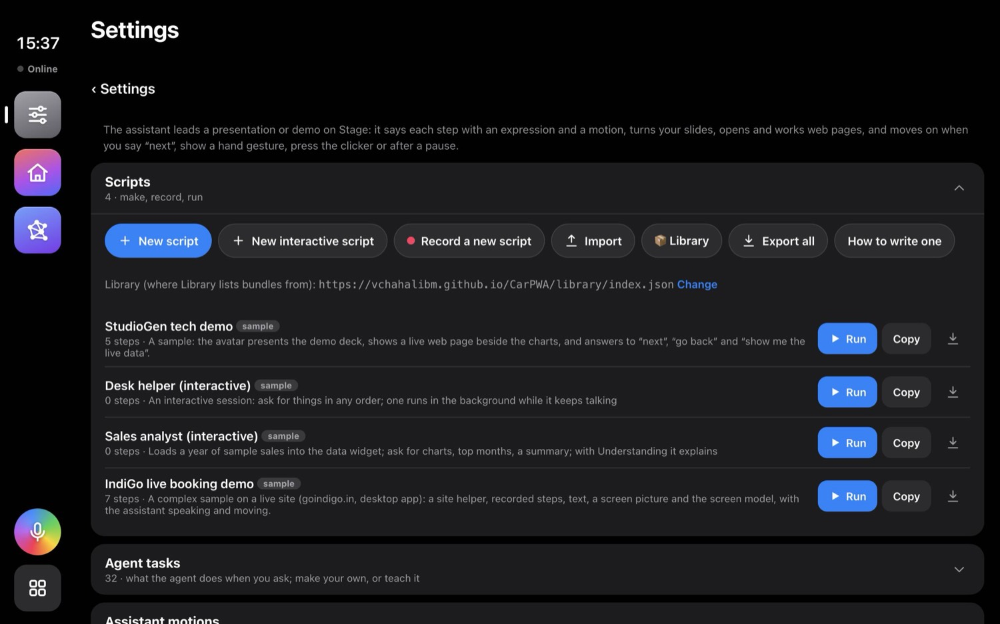
Agent tasks: the list
Settings › Scripts & tasks › Agent tasks: every task, grouped, with ▶ (run it and watch), the sliders (edit), and, for your own, delete (or Reset, for a built-in task you changed). At the top: New task (guided), Teach me and Blank task.
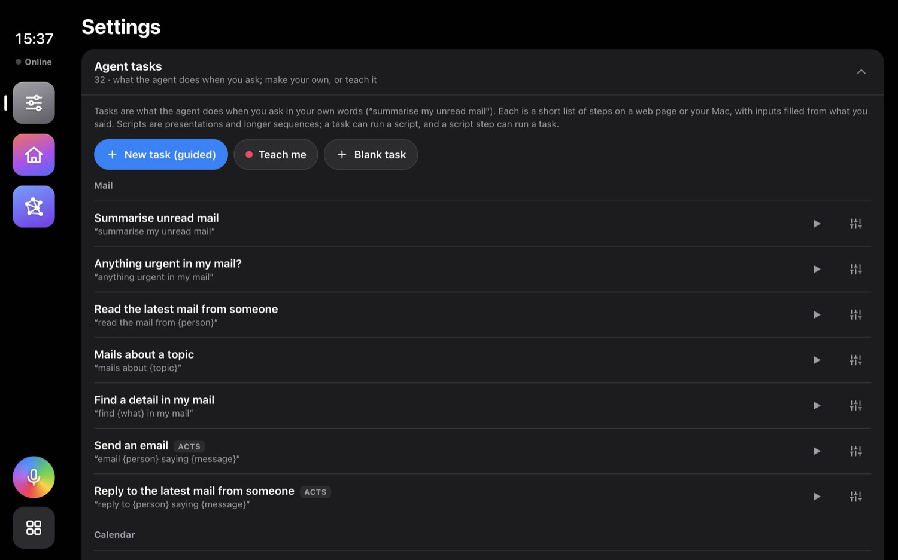
Teach me
- Teach me (or New task › “I'll show you”). Give it a name, the ways you'll ask (words in braces become inputs) and the address it starts at.
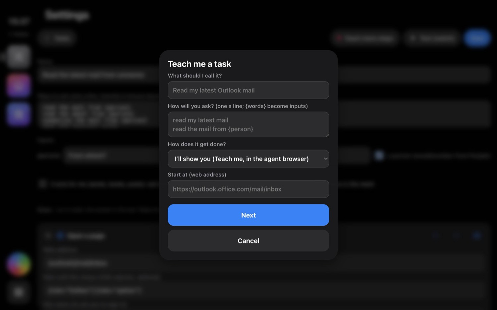
- The agent browser opens with a red Teaching bar. Sign in if the site asks (sign-ins are kept; passwords are never recorded). Then do the task once, the way you always do: click the search box, type, press Enter, open the first result…
- When the answer is on screen, tap Read this part and click the part to read: the message, the list, the table. It's outlined as you hover.
- Done. It asks what to tell you from what it read, and which words you typed change each time: tick them and name them (
search,person); they become inputs, asked for when you don't say them.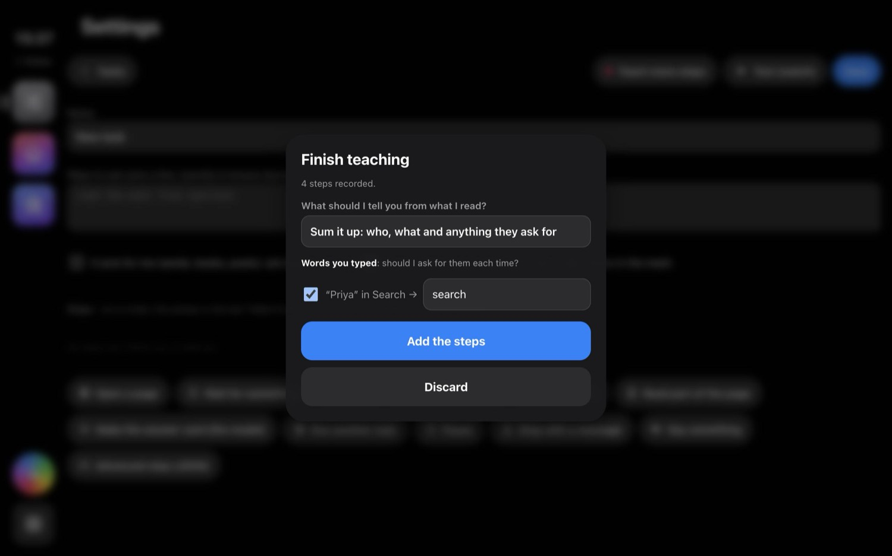
- The steps appear in the editor. Test (watch), fix what needs fixing, Save.
The editor and inputs
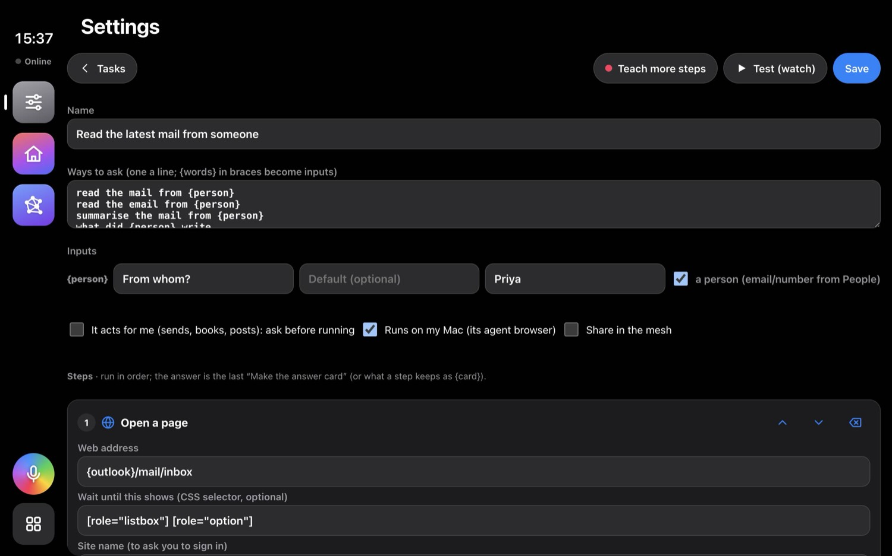
- Name and Ways to ask: one way a line.
{person}in a line becomes an input filled from what you say (read the mail from Priya
→ person = Priya). Several ways help it understand you; Apple's on-device model also matches by meaning. - Inputs: for each, the question when it's missing (
From whom?
), a default (used when it's not said), a test value (for Test), and “a person”, which looks up their email and number in People. - It acts for me: asked before every run (unless you trust it), with your Question before acting (inputs filled in). Runs on my Mac: uses the agent browser (a phone asks the Mac). Share in the mesh: your other devices can get it.
Task steps, one by one
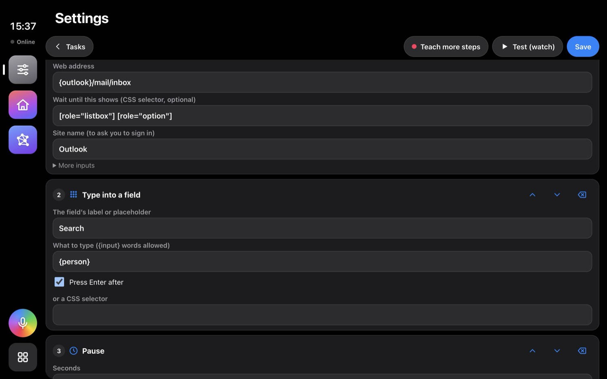
| Step | What it does | How to fill it | When to use it |
|---|---|---|---|
| Open a page | Loads an address in the agent browser and waits for it | The address (inputs allowed: https://site/orders/{order}); Wait until this shows: something that's there once the page is ready ([role="listbox"]); Site name, to ask you to sign in when a sign-in page appears; More inputs: ?q={topic} adds to the address | The first step of most tasks |
| Wait for something | Waits until an element or a text shows | A CSS selector, or a text; at most so many ms | After a click that loads something; slow pages |
| Click | Clicks an element | The text on it (Send), or a CSS selector (button[aria-label="Send"]); several choices with ||; optional in More inputs: carry on if it isn't there. Without it, a miss stops the task with “Nothing called …”; to say your own message, make it optional, keep it (as) and test it with an if | Buttons, links, rows of a list |
| Type into a field | Focuses a field and types for real (works in rich editors like Teams, WhatsApp and Outlook's message box) | The field's label or placeholder (Search), what to type ({person}), Press Enter after; or a selector | Searches, replies, forms |
| Press a key | Enter, Escape, Tab… | The key; a field to focus first | Sending a chat message; closing a pop-up |
| Read part of the page | Reads text into {read} | What to read: selectors, tried in order, || between ([role="document"]||[role="main"]); the whole page if none fit. Each matching element is one line (a list gives one line per row; a row's unread count reads as “(5 unread messages)”, and Outlook's “Unread” comes first). Only lines with these words keeps just those lines (Unread; unread message on WhatsApp): the picking is exact, not left to the model | Before every answer |
| Make the answer card | The language model (Settings › Assistant › Language model; its prompt in Settings › Assistant › Prompts) turns text into the card you see and hear: a headline and up to five items | What to tell you: say what the headline is and what each item's title, detail and time hold (“Headline: how many and from whom. Items: one per mail; title = sender; detail = what they want”), from {read} (or any value). Keep it to 2–4 sentences about one kind of text: on a Mac it's Apple's small on-device model, which gets totals and mixed lists wrong. Keep it as: card for the answer, or another name to put several cards together | The last step of reading tasks |
| Put cards together | One answer from several cards, without the model: one item per source with its count and names, the counts in the headline (“4 Outlook, 3 WhatsApp, 2 Slack mentions”) | The headline (empty: the counts); one line per source, Label=card name (WhatsApp=wa_card) | Catch-ups across sites (recipe) |
| Run another task | Runs a task, shows its card, keeps its result | The task; its inputs, one a line (person={next.items.0.person}) | Building bigger tasks from smaller ones |
| Pause | Waits some seconds | Seconds | Letting a page settle after a click |
| Ask yes or no | Asks you in the middle of a task, after it has read something; no stops the task (a check run and a trusted task go on without asking) | The question, with what was read (Priya said “{last}”. Send “{message}”?) | Showing what you're replying to before it sends; leave Question before acting empty then |
| Stop with a message | Ends the task and says why | The message (No mail from {person}) | Inside an if, when something is missing |
| Say something | A spoken line | The line (inputs allowed) | Progress in long tasks |
| Advanced step (JSON) | Any script step: if, set, repeat, for each, any action | The step as JSON (see Logic and the recipes) | Repetition, conditions, gathering results |
Test, watch, fix
- Test (watch) in the editor (or ▶ in the list) opens a form with every input, filled with its test value; change any, then Run (watch). The values you ran with are kept for next time.
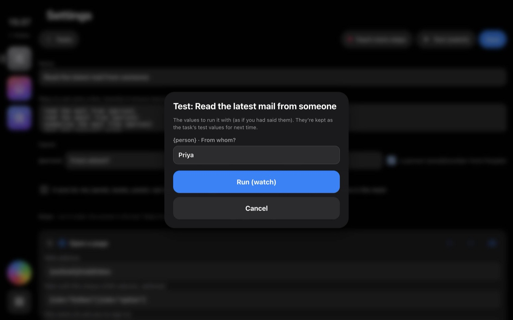
- The agent browser shows in a side panel: the page as the agent sees it, each step listed as it runs, ✓ with what it got (“208 characters read”) or ✗ with why, the element it clicks or types into ringed in red.
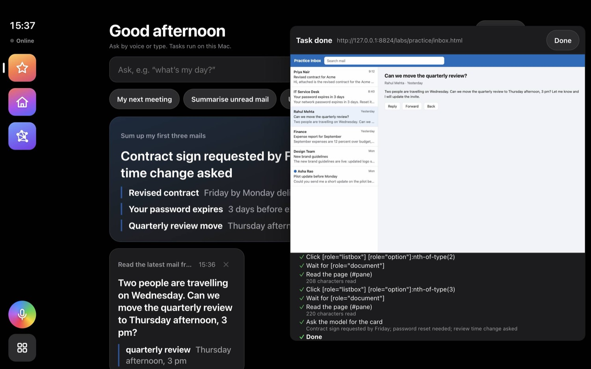
Watching the repetition recipe: three messages opened and read in turn, then summed up. - To go slower: Agent › Library › Settings › One step at a time pauses before each step: Next step, Run the rest, Stop the task. Show the browser while tasks run watches every run, not only tests.
- Fix the step marked ✗ in the editor (often a selector or a wait), test again, Save.
Acting for you, People, sharing
- Acting: a task marked “acts for me” (or that runs one that does) asks
Shall I …?
every time: Yes, Yes, always (trust it from now on), or No. Take trust back in Agent › Library. - People (Agent › Library › People): names with an email (mail, Teams) and a number with country code (WhatsApp). Inputs marked “a person” fill
{person_email}and{person_phone}from here. - Sharing: tick Share in the mesh; the mesh's StudioGens see it in Mesh › Shared and can get a copy (a copy runs with their sign-ins).
- Only my devices: a task that opens a site you sign in to (
{outlook},{teams},{slack},{whatsapp}), uses a container, or runs on your Mac or its files is ticked by itself (the list shows only my devices); tick it by hand for any other task that uses something of yours. Such a task runs on this Mac only for your own devices: the phones and iPads paired with it, and the devices you tick Yours in Mesh › Devices. A shared task that needs no sign-in (a web search, reading a public page) can be run here by anyone in the mesh, by asking in their own words; the owner can untick shared tasks for a device in Mesh › Devices. Shared scripts follow the same rule. Design: profiles and StudioGBee. - A day other than today: “What’s my day” takes a day (
what’s my day on 2nd Nov
,my meetings tomorrow
): Work out the time (ai.when) gives{slot.day}(2026/11/2, Outlook’s calendar address) and{slot.date}(“Monday 2 November”). A way to ask with no input no longer wins when you say more than it holds (a date, a name): the model picks the task that takes it. - Side by side: up to 3 tasks run at once in the agent browser (Agent › Library › Settings › Tasks at once), one at a time per site (a second WhatsApp task waits for the first); each has its own browser with the container's sign-ins, and the watch panel shows a lane per task.
- Signing in from afar: a task that stops at a sign-in page shows Sign in from here on your phone's card: the agent browser on the Mac shows live; tap, type, then ask again.
- Watchers: the full guide with pictures is watchers-guide.html. A watcher can run a task when it has news (Edit › And then: inputs take
{headline}{item}{detail}{value}; tasks that act ask first). Teach it records steps like Teach me (a click in a list row is kept as that row by its name, like “Varun's chat”, not by its place), then you tap Watch this part; the tap that picks isn't recorded as a step (nor for Read this part). A tap inside a list whose rows have no role is recognised by shape (look-alike siblings), and selectors can end withrows-in:#containerto find such a list by shape (used for WhatsApp:#pane-side [role="listitem"]||#pane-side [role="row"]||rows-in:#pane-side). When WhatsApp says it's open in another window, the agent browser presses Use here itself. To see why something isn't found: 🔎 in the agent browser's bar tries a selector on the page (matches outlined), and 🩺 saves the page's structure without its words (see the watchers guide, “Finding out why”). An LLM can write a watcher from the build prompt (formatstudiogen-watcher); paste it in Watchers › + New watcher › Paste a watcher, or in Build with an LLM. - Watching a task: on a task's result card, 👁 Watch this runs it on its own (every 30 minutes by default) and tells you when its answer has new items (each item's title and detail, without times and counts, is what counts as new). Tasks that act aren't offered. Watchers that read pages use the same steps as tasks (
agent.openwith thestayflag keeps a live watcher's page open and reads it again without loading; checks don't show in the watch panel), andagent.readwith a selector that matches each row: one line per row. Watchers read with the flagstrict(none of the selectors fit: it stops with “not found” instead of reading the whole page), then try the part's other finders (self-healing). A live watcher's page tells StudioGen when the part changes (the bridge'sobserve), so it checks within seconds.
: when the Mac (or another StudioGen) a task runs on is offline, the request waits on the asking device while the app is open (the card shows 🕓 and until when), then runs when it's back. How long, per kind (email, calendar, Teams, Slack, WhatsApp, web, anything that sends): Agent › Library › Settings › Waiting requests; 10 minutes each to start with, asked once in the startup checklist. Something that sends and had to wait asks
Shall I still …?first. With a StudioGBee in the mesh, a request waits there instead, so the asking app can be closed; the answer lands on its card when it's back (sending tasks still wait on the device, to ask again).
Build with an LLM
Instead of the editor, you can describe a task in words and let a language model write it, in the app (typed, or by voice on Stage) or in any chat or terminal.
Build a task in the app
- In Settings › Scripts & tasks › Build with an LLM, pick the AI (below) and press Build a task. On Stage, just say
help me build a task
. - A card opens beside the assistant (on Stage, on the side away from it). Say or type what the task should do.
- The AI's questions come one at a time; on Stage the assistant says them. Answer by voice or by typing in the card: a choice (
b
, or tap it),default
, or values asperson is Priya Nair, message is on my way
. Each answer stays listed in the card under its question. - The plan is read out: say
build it
(or tap), or say what to change. - It's checked on the real pages, step by step (nothing is sent), and the results show in the card. A step that misses:
show me
, then click the right thing. Thenrun it
(watched; a task that acts still asks first) andsave it
; oropen it in the editor
.Stop building
closes it.
The AI is told which tasks already exist, so it gives a new task its own ways to ask and can run existing tasks as steps.
| AI | Builds | Asks | Speed | Private | Notes |
|---|---|---|---|---|---|
| Claude (your Anthropic key, Settings › Assistant) | ★★★★★ | ★★★★★ | ★★★★☆ | ★☆☆☆☆ | New steps, selectors and checks; every task it wrote in the tests ran first time |
| A command-line AI: Claude Code, Ollama, IBM Bob Shell or your own command | ★★★★★ | ★★★★★ | ★★★☆☆ | ★★☆☆☆ | As good as the tool; Claude Code uses your subscription, about 15 s a turn. You allow the command once (it gets the conversation as $1) |
| The app’s language model (Settings › Assistant › Language model: gpt-oss on this Mac by default, your Mac’s from a phone, or Claude) | ★★★★☆ | ★★★★☆ | ★★★☆☆ | ★★★★★ | The default. Nothing leaves the Mac when it runs there. gpt-oss 20b asks properly and builds tasks that pass the check in 1–3 minutes; gpt-oss 120b (a pool of Macs) or Claude write sturdier steps. Its prompt can be read and changed in Settings › Assistant › Prompts |
| IBM Bob (hand-off) | ★★★★☆ | ★★★★☆ | ★★☆☆☆ | ★★☆☆☆ | Bob's chat opens with the prompt attached; you talk to Bob there and paste its JSON into the card. Not spoken |
| Quick builder | ★★☆☆☆ | ☆☆☆☆☆ | ★★★★☆ | ★★★★★ | With the app’s language model: only puts existing tasks together and asks nothing back: you correct its plan in a form (below) |
In any chat or terminal
- Copy the prompt and paste it into Claude. It's the full description of tasks and scripts (steps, site notes, rules learned from testing), also in the repository as
docs/llm/build-prompt.md, so it works from a terminal too. - Say what you want (
a task that tells me what's unread on WhatsApp and Slack
). It asks a few numbered questions at a time: how you'd ask for it, which inputs and test values, what to read, what the answer says, what it should do when something is missing. Answer asperson is Priya Nair
,channel is sales
. - It sums up what it will build, then writes one JSON block, with a
verifylist of anything it guessed. - Paste the JSON (or Import a file) and Import. It's checked: unknown steps, inputs missing from the ways to ask, a click an if tests without
optional(fixed for you), a way to ask another task already has. - Check it now runs it step by step on the real pages with its test values, watched. A step that would send, post or confirm only checks that its button or field is there: nothing is sent. Each step shows ✓, ✗ with why, or – (skipped), and “It would answer: …”.
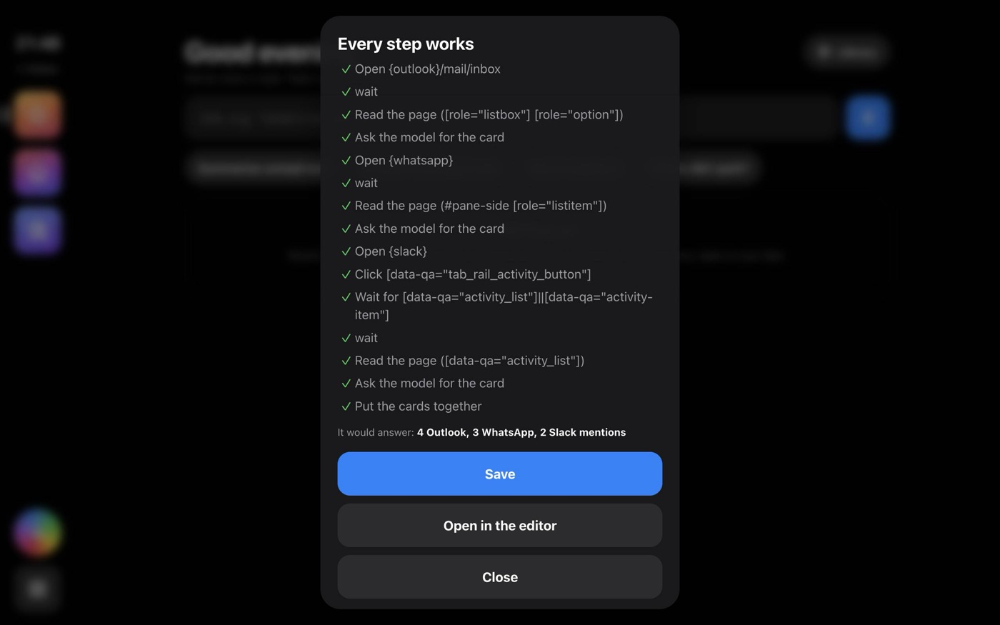
The morning catch-up Claude wrote, checked on the practice sites: every step ✓ and what it would answer. - A ✗ on a click, typing, wait or read gets Show me: the agent browser opens where it stopped; click the right thing and its selector replaces the step's, then it checks again. Then Save, or Open in the editor.
Tested on the practice sites: tasks Claude wrote for unread WhatsApp and Slack (with mentions), a reply on WhatsApp, a Slack channel summary and a morning catch-up across Outlook, WhatsApp and Slack all passed the check and ran right the first time, without editing.
The quick builder
It was made for Apple's small on-device model, which is too small for the whole prompt; it now uses the app's language model (gpt-oss), in steps that feed each other:
- Pick The Mac's own model and press Build a task (or say
help me build a task
), then say what the task should do. The model picks the building blocks: up to three tested tasks (the library's and your own) or reading a web page, with their inputs. It chooses from a shortlist that fits your words; parts from sites you didn't name, inputs it swapped and stand-in values (“someone”) are corrected. - A form shows the plan: name, ways to ask, the parts and their inputs (
person={person}is asked each time,person=Momis fixed), and the test values to type or say asperson is Mom, message is running late
. Change anything.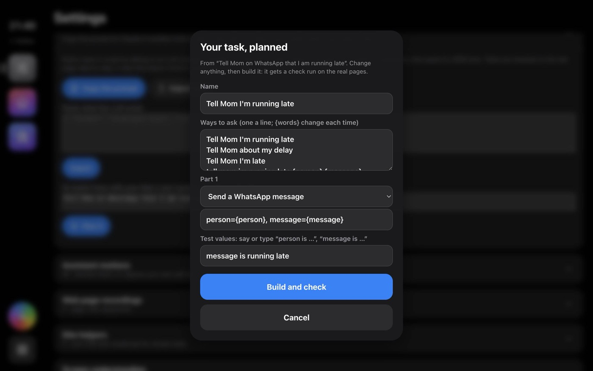
“Tell Mom on WhatsApp that I am running late”, planned by the Mac's model: one part, Send a WhatsApp message. - Build and check puts the task together (a Run another task step per part, Put cards together when there are several) and imports it like an LLM's task, with the same check run.
Tasks can't run with a needed input blank: I need the person for that
.
Finding things on a page
Every click, type, wait and read needs to find something on the page again, next time, when the page may look a little different. From most to least reliable:
| Way | Looks like | Use it for |
|---|---|---|
| A role | [role="listbox"], [role="option"], [role="document"], [role="main"] | The big parts of web apps (Outlook, Teams, Slack, WhatsApp use them): the message list, a row, the message, the main area |
| A label | button[aria-label="Send"], [aria-label="Message body"] | Buttons and areas named for screen readers; stable across languages less so |
| A test id | [data-testid="search"] | Pages that have them (your own pages: add them) |
| Its text | Click Send, type into Search | Buttons and fields with a fixed label |
| Its place | [role="option"]:nth-of-type(2) | “The second row”, whatever it says; loops over rows |
| Its id or path | #topSearchInput, main > div:nth-of-type(3) | Last resort: ids with long numbers and deep paths change when the site updates |
How to find one: Teach me records the best it can for each click and typing; Read this part picks an area and gives its selector; in the editor you can try another choice and Test. Several choices with || are tried in order, so button[aria-label="Send"]||button[title="Send"] works on both versions of a page. In scripts on Stage there are more ways: the words on screen, a picture of an area, a description for the screen model, or your own trained detector.
Recipe: repeat over items in a list tested
Goal: open the first three messages one after the other, read each, and sum them up together. When: anything that repeats over rows: messages, search results, orders, tickets.
- Open a page at the inbox, waiting for
[role="listbox"]. - Advanced step: start an empty collection:
{ "set": "all", "value": "" } - Advanced step: for each of 1, 2 and 3: click that row by its place, wait for the message, read it, add it to the collection:
{ "each": "1, 2, 3", "as": "n", "steps": [ { "do": "agent.click", "args": ["sel=[role=\"listbox\"] [role=\"option\"]:nth-of-type({n})"] }, { "do": "agent.wait", "value": "[role=\"document\"]", "args": ["ms=8000"] }, { "do": "agent.read", "value": "[role=\"document\"]||#pane", "as": "read" }, { "set": "all", "value": "{all}\n---\n{read}" } ] } - Make the answer card from
{all}: “These are three emails separated by ---. One item per email: title = sender and subject; detail = what they want.”
Variations: more rows: "each": "1, 2, 3, 4, 5". Only rows marked unread: read the list first (Read part of the page on [role="option"], one line per row) and let the card pick the unread ones, which needs no clicks at all. Over values you said: "each": "{people}" with … for Priya, Rahul
.
Result on the practice inbox: “Contract sign requested by Friday; password reset needed; review time change asked”, one item per mail (picture in Test, watch, fix).
Recipe: repeat until nothing is left tested
Goal: press “Load more” until it's gone, then read everything. When: pages that show a few results at a time.
{ "until": "{more} is false", "steps": [
{ "do": "agent.click", "value": "Load more", "args": ["optional"], "as": "more" },
{ "wait": 1500 }
] }
optional makes the click carry on when the button isn't there, and "as": "more" keeps whether it clicked; the loop stops the first time it didn't (and after 1000 rounds at most). The next steps (a read, the card) run once it's all loaded. For a fixed number of rounds use { "repeat": "5", "steps": [ … ] }.
Recipe: search, open the first result, read it tested
Goal: read the mail from Rahul
. When: anything that starts with a search.
- Open a page (inbox), wait for
[role="listbox"]. - Type into a field
Search, what to type{person}, Press Enter after. - Pause 1 s (the list redraws).
- Click selector
[role="listbox"] [role="option"](the first row). - Wait for
[role="document"], then Read[role="document"]. - Make the answer card: “Sum up this email: who wrote, what it is about and what they ask for.”
On the practice inbox, with person = Rahul: “Two people are travelling on Wednesday. Can we move the quarterly review to Thursday afternoon, 3 pm?”
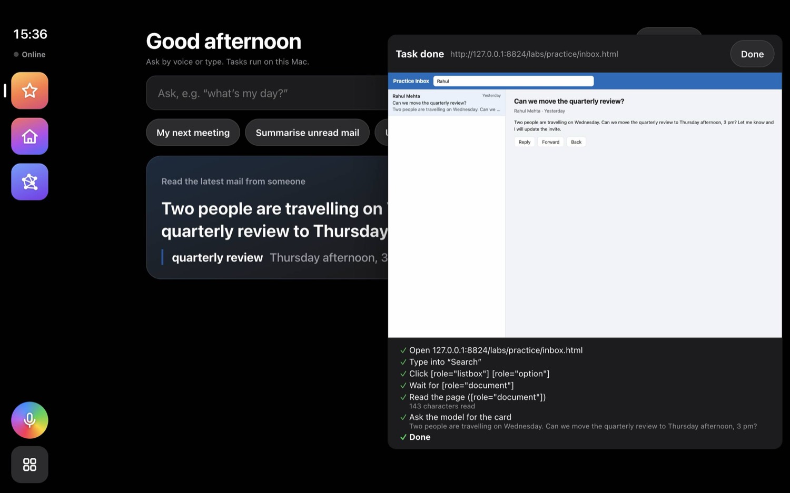
Recipe: stop when nothing is found tested
After a read, stop with a clear message instead of an empty card:
{ "if": "{read} is empty", "then": [ { "do": "agent.fail", "value": "There's no mail from {person}." } ] }
Or check what the page says (on the practice inbox a search for someone with no mail shows “No messages match”; the task then stops with “There is no mail from Zebedee.”): { "if": "{read} contains No messages match", "then": [ … ] }. Conditions can be joined: {count} > 0 and {read} contains invoice.
Recipe: slow pages, pop-ups and sign-ins
- Slow pages: give Open a page a Wait until this shows, and put a Wait for something after clicks that load content. Waiting for the thing you need beats a fixed pause: it goes on as soon as it's there.
- Pop-ups and banners: a Click on
CloseorAccept essentialwithoptional, so the task carries on when there's none; or a site helper that clicks it for every page. - Sign-ins: the Site name on Open a page makes a sign-in page stop the task with “Sign in to Outlook once in the agent browser”; sign in there once and it's kept.
- Robot checks (“unusual traffic”) stop the task and open the agent browser so you can answer them.
Recipe: elements whose text changes
Rows of a list, counters (Inbox (12)) and dates change every time. Find them by what doesn't change: the role and place ([role="option"]:nth-of-type(1)), a label ([aria-label^="Inbox"]: starts with), or the area around them. ^= starts with, *= contains, $= ends with.
Recipe: use one task's result in another
A task's card is kept with as, and its parts are reachable by dots: {next.headline}, {next.items.0.title}, {next.items.0.person}, {next.items.0.place}. The built-in Brief me for my next meeting does exactly this:
- Run another task My next meeting, kept as
next. - Advanced:
{ "if": "{next.items.0.person} is empty", "then": [ { "set": "card", "value": "{next}" } ], "else": [ … ] } - In the else: Run another task Read the latest mail from someone with
person={next.items.0.person}, kept asmail, then Make the answer card fromMeeting: {next} Latest mail: {mail}.
Recipe: several sources in one answer tested
A morning catch-up: unread mail, unread WhatsApp chats and your Slack mentions in one card.
- For each site: Open a page, Read part of the page with Only lines with these words (
Unreadfor Outlook,unread messagefor WhatsApp), then Make the answer card about that one source, kept as its own name (mail_card,wa_card,mention_card). - Last: Put cards together with
Outlook=mail_card,WhatsApp=wa_card,Slack mentions=mention_card.
Result on the practice sites: “4 Outlook, 3 WhatsApp, 2 Slack mentions”, with the names under each. One card over all three sources gets the counts wrong on the on-device model; one card per source and putting them together in code keeps them right. Simpler still: Run another task for each built-in task (Summarise unread mail, Unread WhatsApp chats, Slack mentions and unread) and put their cards together; that's what building with your Mac's model does.
Recipe: send something, safely
- Tick It acts for me, and write the Question before acting with inputs in it:
send “{message}” to {person}becomesShall I send “running late” to Priya?
- For mail, open the compose page with the values in the address: Open a page
{outlook}/mail/deeplink/composewith More inputs?to={person_email},?subject={subject},?body={message}. - Click
Send(selectorbutton[aria-label="Send"]||button[title="Send"]). - Test on yourself first: put your own address in People.
Script recipes
A slideshow that loops until a gesture
Steps “Slide 1”…“Slide 5”, each moving on automatically after 8 s; the last jumps back to the first (Next › jump); a branch on the presenter's thumb up jumps to the talk. Good for a lobby screen that waits for the speaker.
Say every row of a table
{ "do": "data.csv", "value": "samples/sales.csv", "as": "rows" },
{ "each": "{rows}", "as": "row", "steps": [ { "say": "{row.month}: {row.revenue} in revenue." } ] }
A long job while the assistant keeps talking
An action with In the background on (an export, a report task), named; the next steps keep presenting; { "await": "export" } before the step that needs it; its then steps say “The export is done”.
Fetch something live in the middle of a talk
The action Run another task (What's my day?, Flight status) as a step: on Stage its card shows over the slides while the assistant reads it, and the talk carries on at the next step.
An interactive helper that runs tasks
An interactive script whose intents each run a task: show the mail from {person} → Run another task with person={person}; the assistant listens again after each.
Troubleshooting
“Sign in to … once in the agent browser”: a task stops, and the agent browser opens, whenever the page it opens doesn't become ready: a sign-in page on any site (Outlook, Slack, WhatsApp's QR code, others), a “browser not supported” page, a robot check, or anything unexpected. Sign in there once (it's remembered), then ask again. It never answers “nothing” from a page that didn't load.
Signed out again? Sign-ins are kept across restarts and updates (from StudioGen 0.11). To keep two accounts of one site, use containers (Agent › Library › Settings › Containers and sign-ins) and set the task's Container in the editor.
| What you see | What to do |
|---|---|
| A step ✗ “Couldn't click…” / “No field…” | The selector or text no longer matches. Teach that part again (Teach more steps), or give two choices with ||. |
| “I couldn't read anything on that page” | The read found nothing: check What to read, add a Wait for something before it, or read [role="main"]. |
| The card has the wrong facts | Read a smaller area (only the message, not the whole page), and be specific in What to tell me. Watch it: the panel shows what was read. |
| “Sign in to … in the agent browser” | Agent › Library › Agent browser, sign in once, Done, run again. |
| It works when watched but not hidden | Pages behave the same (same size); usually it's timing: add a wait. |
| A script step doesn't find its element | Use “Its text on screen”, a picture of the area, or the screen model's description instead of the recorded element. |
| Something else | Settings › Logs (debug mode) shows each step; share the log. |
How the apps talk
Relays, locked boxes, pairing, direct links, your secret phrase.
Open on its ownA friendly guide to the Connections part of the apps: what it does, how it keeps your messages secret, and how you stay in control. Written so a 6th grader can follow it. (Grown-ups: the detailed design is in connections.html.)
1. What it does
Connections lets them work as a team. From your phone you can say “run the sales summary on my Mac”, and the Mac does the job and sends the answer back to your phone, even if you're in a car far away from home.
2. The front-door problem
Every home or school network has a router. Think of it as the front door of a building. It lets people inside go out, and it lets answers come back in. But if a stranger knocks from outside, the door stays shut. That's good for safety, but it means your phone (outside, on mobile data) can't just knock on your Mac's door.
3. Meeting places (relays)
So the two apps meet somewhere both can reach: a relay. A relay is like a public bulletin board or a post office locker on the internet. Each app walks out its own front door (always allowed!), pins messages on the board, and reads the messages left for it.
The apps use free, public relays that already exist. There are three kinds, and the apps can use all of them:
Message boards made for smart gadgets (lights, sensors). Fast and simple.
Message boards run by many different people around the world.
Only good for introductions (“here's how to reach me”), not for carrying your actual messages.
4. Locked boxes (how messages are kept secret)
Before a message leaves your phone or Mac, the app puts it in a locked box. This is called encryption. Only your two devices have the key that opens it.
- The key has two parts. The first is a secret number made by the computer at random. It's 256 bits long, so there are more possible keys than grains of sand on all the beaches of Earth, many, many times over. Nobody can guess it. The second part is optional and comes from you: a secret phrase that only you know (section 8). The two are mixed together, and the result is the key that really locks your messages.
- The lock is called AES-GCM. It's the same kind of lock banks and websites use. It does two jobs: it scrambles the message so it looks like noise, and it adds a seal. If anyone changes even one letter, the seal breaks and the app throws the message away.
- A label on the box says which way it's going (Mac → phone, or phone → Mac), and that label is part of the seal too. A box can't be turned around and sent back the other way.
- A timestamp and a message number go inside. Boxes older than 2 minutes, or ones the app has already seen, are thrown away. So nobody can copy a box today and send it again tomorrow to trick your Mac.
There are two more locks for special cases:
- Direct links (section 6) use WebRTC's own built-in lock, called DTLS, on top of everything.
- Nostr relays need every message to carry a signature, like an autograph. The app makes its own autograph key, and it has nothing to do with your secret key.
5. Pairing: sharing the key in person
How do two devices get the same secret key without anyone else seeing it? In person, with a QR code.
- On the Mac: StudioGen › Settings › Connections › Pair a phone or iPad (once). A big QR code appears.
- On the phone: DriveGen › Settings › Connections › Pair once. Point the camera at the code.
- Done! The code held three things: a random room name (where to meet), the secret key, and the Mac's list of meeting places.
6. Talking directly
Once they've met at a relay, the apps try to talk directly, like two friends who found each other's phone numbers. This uses a technology called WebRTC.
- Each app asks a STUN server, “What's my address as seen from outside?” (It's like asking someone across the street to read your house number.)
- They swap addresses through the relay, inside a locked box of course.
- Both apps send a message to each other at the same moment. Each front door sees its own app sending something out, so it lets the answer back in. This trick is called hole punching.
This works most of the time, but some front doors are extra strict (some phone companies, offices and hotels). When that happens, the relay simply keeps carrying the locked boxes. You don't have to do anything.
- Whenever possible: try to go direct, even between different networks.
- Same network only: go direct only when both are on the same Wi-Fi.
- Never: always use the relays.
There's also Connect directly (scan a code each time). It works on the same Wi-Fi with no internet at all, but it doesn't remember the pairing, so you scan again next time.
7. When a meeting place closes
Public relays sometimes go offline. So the Mac keeps an ordered list of meeting places (Settings › Connections › Relays), and both apps follow the same rule:
- An app knows a place works because its own messages come back to it from there, like hearing your own echo.
- Every “hello” (about every 15 seconds) says which places you're using, and each app also visits the other's places. That way they always meet.
- If a place stops answering, both apps move down the list. When it comes back, they move back up.
- If the two haven't heard each other for a while, they each check more places on the list (4, then 6) until they find each other.
The Mac is the boss of the list. You can add your own meeting place, move places up or down, and test them all. If you change the list, pair your phone again so it gets the new list. Until then, it keeps using the old one.
8. Your own secret phrase
The random key is very strong, but you didn't choose it, and it travels inside the QR code. So you can add a secret phrase of your own on top of it, like adding your own padlock to a box that already has one.
- On the Mac: Settings › Connections › Pair a phone or iPad. Type your secret phrase (or leave it empty for none), then Show the code.
- On the phone: scan the code. The phone then asks you to type the same phrase. If you make a typo, it tells you right away.
- To change it later: on the Mac, tap Change phrase next to the device and type the new one. Then on the phone, go to Settings › Connections › Secret phrase and type the same new phrase. Messages keep working the whole time: the Mac switches only once the phone has the new phrase.
- To remove it: change it to an empty phrase on both.
What happens to your phrase
- It is never sent over the internet and never put in the QR code. The code only holds a tiny “check” so the phone can tell you if you typed it wrong.
- Each app turns your phrase into a big number using a slow recipe (it repeats a scrambling step 600,000 times). That's quick for you, but it makes guessing your phrase slow for anyone trying.
- That number is mixed with the random key. Neither part is enough on its own: someone needs both the code and your phrase to read your messages.
- The apps remember only the mixed-up number, not the words you typed.
9. Changing the secret: you're in control
Changing your secret now and then is good practice, like changing a password. There are two parts you can change: the random key (the Mac makes a new one; you don't type anything) and your phrase (section 8). Your phrase stays the same when the random key changes.
- Change secret next to a device: gives that device a new key now.
- Change all secrets now: every paired device gets a new key.
- Change every secret automatically: every day, every week, every month, or only when you ask.
- Revoke a device: throws its key away for good. That device can't talk to your Mac any more, unless you pair it again.
- Pair again: also makes a brand-new key (and gives the phone the newest list of meeting places).
- Change phrase: your own part (section 8).
What happens when the secret changes
- The Mac makes a new random key and sends it to your phone, locked with the current key. So only your phone can open it.
- Your phone switches to the new key and replies, using the new key.
- When the Mac sees the new key working, it switches too.
- Both keep the old key for 10 minutes, only to open boxes that were already on their way. After that it's gone.
- If your phone was off, it gets the new key the next time it says hello.
10. Checking that it works
Settings › Connections › Test the connection (on both apps) checks everything in about 20 seconds and tells you in plain words:
- What kind of front door your network has. Friendly doors keep the same address for everyone; strict ones give a new address for every place you talk to, which makes direct links harder.
- Which meeting places work from here, and how fast each one is.
- Whether the other app can be reached, and whether it's direct or through a relay.
- A report you can copy and share.
The people who build the app also test it in a pretend-network lab with pretend front doors (friendly, strict, ones that block things), plus a test every night between computers in different places on the real internet.
11. Where this lives in the code
For the curious (and future programmers!). Each file is one piece of the puzzle.
| File | What it does (in simple words) |
|---|---|
js/relay.js | The meeting places and the locked boxes: the list of relays (MQTT, Nostr, trackers), the rule for picking and switching places, locking and unlocking messages (AES-GCM), mixing in your secret phrase (PBKDF2 and HKDF), pairing codes, changing the secret and the phrase, and the Relays and Direct link settings. |
js/direct.js | Talking directly with WebRTC: making and answering the direct link, the QR codes for “Connect directly”, and reading QR codes with the camera. |
js/link.js | The front desk: picks the best way to talk (direct, then relay, then Tailscale), “run … on my Mac” by voice, the Mac's side that answers phones, and the Connections screens. |
js/linktest.js | Test the connection: front-door type, every relay, the other app, and a plain-words result. |
js/app.js | The Settings page, including the Connections tab. |
js/commands.js | Understands the voice command “run … on my Mac”. |
desktop/link.js | Only for the optional Tailscale way: a little server on the Mac and its pairing code. |
desktop/main.js, desktop/preload.js | The Mac app's engine room: starts the Tailscale server and lets the page use it, and makes the Mac share its local address in direct-link codes. |
vendor/nostr/nostr.bundle.js | A helper library that signs Nostr messages (the autograph). |
vendor/qrcode/qrcode.js, vendor/jsqr/jsQR.js | Helper libraries to draw QR codes and read them with the camera. |
tests/net/lab.mjs, tests/net/ns.sh, tests/net/build.sh, tests/net/web.mjs, tests/net/peer/agent.mjs | The pretend-network lab: pretend front doors (friendly, strict, blocking), a pretend internet, and a robot that runs both apps and checks the results. |
tests/net/remote.mjs, .github/workflows/net-nightly.yml | The nightly test between computers in different places on the real internet. |
docs/connections.html, docs/connection-tests.html | The grown-up versions: the full design and the test plan. |
12. Word list
| Router | The box that connects a building to the internet: its front door. |
| Relay | A public meeting place on the internet where apps leave messages for each other. |
| Encryption | Locking a message so only someone with the key can read it. |
| Key | The secret number that locks and unlocks messages. Ours is random and 256 bits long. |
| AES-GCM | The kind of lock used. It scrambles the message and adds a seal that shows if anyone changed it. |
| Pairing | Sharing the key between your phone and Mac in person, with a QR code. |
| WebRTC | A way for two apps to talk directly, with its own lock (DTLS). |
| STUN | A helper that tells your app its outside address. |
| Hole punching | Both apps sending at the same moment so both front doors let the answers in. |
| TURN | A delivery helper that carries locked traffic when direct links can't get through. |
| Secret phrase | Words only you know, mixed into the random key. Typed on both devices, never sent. |
| PBKDF2 | The slow recipe that turns your phrase into a big number, so guessing it takes a long time. |
| HKDF | The mixer that combines the random key and your phrase's number into the real key. |
| Revoke | Throwing a device's key away so it can't connect any more. |
DriveGen & StudioGen · Connections explained · 18 October 2026
MuseTester
The apps’ tester: running tests, writing them, recording them, one engine with scripts.
Open on its ownMuseTester is the apps' main tester. It works StudioGen, DriveGen, Workers and the mesh the way a person does: it clicks, types, scrolls and waits, and it checks what happens. This guide covers running it and writing new tests. Anyone who adds a feature to the apps also adds a test for it, so this guide is for them too.
1. What you need
- Node.js 22 or newer (
node -v). - StudioGen installed in /Applications, or the desktop app's files in the project:
cd desktop && npm install. Use--app devto test today's code fromdesktop/. - Google Chrome: it shows the control panel and runs DriveGen as a phone or an iPad.
- Optional: Docker (OrbStack) for the Worker and StudioGBee tests.
Tests use a throwaway profile by default. Your own StudioGen, its sign-ins and its watchers are never touched. Only tests marked "profile": "mine" use your profile, and only when you pass --profile mine.
2. Running tests
node tools/musetester/muse.mjs # the panel, with every test node tools/musetester/muse.mjs rpa watchers # tests by id or tag node tools/musetester/muse.mjs rpa-engine --go # start at once, end when done node tools/musetester/muse.mjs --silent # no panel, windows hidden: for a run on its own node tools/musetester/muse.mjs --list # every test, its profile and tags node tools/musetester/muse.mjs --record my-test # you use the app; it writes the test
| Option | What it does |
|---|---|
--app installed|dev | The installed StudioGen (the default), or the one in desktop/ with today's code. |
--silent | No panel, StudioGen hidden, DriveGen headless, and steps that need you are skipped. Clicks and typing use page events. |
--go | With the panel: the chosen tests start straight away, and MuseTester ends after them. |
--speed 2 | Show mode twice as fast (0.5: half as fast). |
--no-show | The windows are in view, but nothing is shown moving (no pointer and no real input). |
--skip docker,slow | Leaves out tests with these tags or ids. |
--profile mine | The tests that need your accounts. Add --restart-mine to let MuseTester quit your StudioGen and open it again afterwards. |
--keep | Leaves StudioGen open after the tests, so you can look around. |
--mark | Ticks the try-it-out items in docs/TasksNeedingComeBack.md that passed. |
3. The control panel
The panel opens in its own window beside the app. It lists the tests. Open one to see its steps, coloured as they run:
grey: to run blue: running green: passed red: failed (its note says why, and a picture is taken)
- Run all or Run on one test. In one go runs straight through. Step by step waits for Next step before each step.
- When a step fails, choose Try it again (after fixing something by hand), Skip it, or Stop this test.
- Steps only you can do (a drive, a tap on your phone) show Your turn.
Show mode is the default when the panel is open. A pointer glides to each target, rings it in blue and clicks it with real mouse input. Typing appears letter by letter, and a caption at the top names the test and the step. When a watcher checks, the agent browser's panel shows the page it reads.
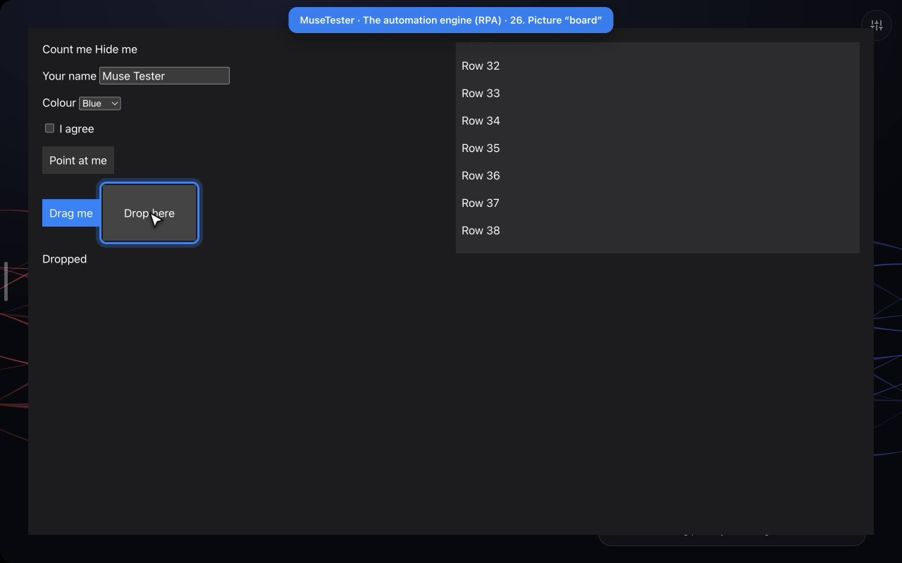
4. One engine: RPA
Everything MuseTester does on the screen goes through RPA (js/rpa.js), the app's own automation engine. That covers clicking, typing, keys, scrolling, pointing, dragging, dropdowns, checkboxes, waiting and reading. Scripts use the same engine through the rpa.* actions, on Stage or anywhere. So a test that passes shows that the engine your scripts use works too.
| Where | Input |
|---|---|
| StudioGen, show mode or a script | Real input: Electron's sendInputEvent through DriveDeckDesktop.input. It is checked: a click on something that is covered fails and names what covers it. |
| StudioGen silent, and DriveGen | Page events (pointer, mouse, click, input, change, keys). |
A page of the agent browser (web) | The webview's own real input; fields are found and focused through the bridge. |
RPA never types into or records password, payment or one-time-code fields.
5. Your first test
A test is one JSON file in tools/musetester/tests/. Its id is the file name.
{
"id": "settings-theme",
"title": "Settings: the light theme is chosen through the screen and kept after a restart",
"tags": ["settings", "ui", "rpa"],
"steps": [
{ "do": "launch" },
{ "do": "view", "name": "settings" },
{ "do": "click", "role": "tab", "text": "System", "why": "Open the System tab" },
{ "do": "click", "text": "Light", "within": "Appearance", "why": "Appearance: Light" },
{ "do": "expect", "js": "document.documentElement.dataset.theme", "equals": "light", "why": "The screen turned light" },
{ "do": "quit" },
{ "do": "launch", "why": "Open it again (the same profile)" },
{ "do": "expect", "js": "document.documentElement.dataset.theme", "equals": "light", "why": "Still light" },
{ "do": "errors.none", "ignore": ["ResizeObserver"] }
]
}
- Each step has
do(what to do) and usuallywhy, which the panel and the report show. Write it the way you'd tell a person. onpicks the app when there are several:studio(the default),phone, or a name given withas.optional: true: a failure doesn't stop the test.- The steps stop at the first failure.
cleanupsteps always run. ${name}in any value is a variable: from an earlier step'sas, or from yourmuse.config.json.
This is a real test, tests/settings-theme.json. Run it: node tools/musetester/muse.mjs settings-theme --go. Then run it again with --silent. A good test passes both ways.
6. Finding things on the screen
Name things the way a person would. Every step that acts on something takes a target:
| Field | Finds | Example |
|---|---|---|
text | The words on it: buttons, links, tiles, chips, tabs, menu items. An exact match wins over a starting one, which wins over “contains”. Of several, the tightest is taken (the button, not the card around it). Words that aren't on a control (a message, a status) are found too. | "text": "+ New watcher" |
label | A field by its label, placeholder or aria-label. | "label": "Your name" |
sel | A CSS selector. Use it when there are no words (an icon) or the words change. | "sel": "[data-wt=\"list\"]" |
role | button, link, textbox, checkbox, combobox, tab… (with text to narrow it down). | "role": "tab", "text": "Logs" |
nth | The nth of several that match (from 1). | "text": "Delete", "nth": 2 |
within | Only inside something: a selector, or words (the part around them). | "within": "#sheet" |
sheet: true | Short for within: "#sheet", the open sheet. |
"text": "Check and save" keeps working when the layout changes, and it reads well in the report. Use sel for icons, and data-* attributes where the app has them (data-wt, data-ag).7. Every step
Doing things (RPA)
| Step | Fields | Does |
|---|---|---|
click | a target; double, right | Clicks it (double-clicks, right-clicks). |
type | a target (label, sel or target), text; enter, clear: false | Clicks into the field and types letter by letter. It clears the field first unless clear: false. |
key | key | A key, with modifiers: Enter, Escape, Tab, Meta+K, Ctrl+Shift+P. |
scroll | a target (or none: the screen); dy, dx, to: "top"|"bottom", until | Scrolls by an amount, to an end, or until until (a target) shows. |
hover | a target | Points at it (menus and tips that open on hover). |
drag | a target; onto (words or { "sel": … }), or dx/dy | Presses, moves in small steps, and lets go. |
choose | a target (the dropdown), option | Picks an option by its words or value. A custom dropdown is opened and its option clicked. |
tick | a target; on: false | Ticks (or unticks) a checkbox or switch, only if it isn't already. |
wait.for | a target; gone, timeout (s) | Waits until it shows (or goes). |
look | a target; as; a check | Reads what it says; checked when you give equals, contains…. |
say | text, wait | A command, as if spoken. In show mode it is typed into the Agent screen's Ask box. |
view | name | Opens a screen: agent, settings, dashboard, home…. |
The apps
| Step | Does |
|---|---|
launch | Opens StudioGen: as, practice (the practice sites), profile, app, env, folders. |
drivegen | Opens DriveGen in Chrome: device (iphone, ipad, ipad-portrait), settings. |
quit | Closes an app. A launch afterwards is a restart with the same profile. |
practice, practice.signin, practice.incoming | The practice sites on or off, signed in, and given news (site, text, query). |
fixture, file | A page, feed or JSON that MuseTester serves at ${fx.name}; a file for folder watchers. |
watch.make, watch.check, watch.set, watch.delete | Watchers. In show mode, watch.make goes through the screens. |
task | Runs an agent task; its card goes in card. |
script | Runs a script (script: its JSON, or name) to its last beat, then stops it; its variables go in as. |
journey.start, journey.step | Made for you from a tandem journey ("journey" in a test: the mesh tests). |
native, native.keys | AppleScript, and keystrokes into a macOS app. |
human | Asks you to do something (say), then waits. |
wait, screenshot | s seconds; a picture (name). |
Code, when you need it
| Step | Does |
|---|---|
eval | Runs js in the app's page; the value goes in as. Use it to set up (a board of controls, a setting) or to read state that isn't on screen. Without return the code is one expression; with it, a function body (await allowed). |
until | Waits until js is true, or meets a check, up to timeout s. |
click, type, choose), and use eval for setting up and for looking. A test that clicks through the screens also tests the screens; one that calls the code directly tests only the code.8. Checking results
expect checks one of these:
var: a variable, with dots for parts (check.hit.headline);js: a value in the page;sel: something shown on screen;text: words anywhere on screen.
It checks with:
equals,contains,lacks,match(a regular expression),gte,lte;- none of them: the value must be true.
look, web.read, until and web.expect take the same checks. Other checks:
errors.none: no errors in the page (ignorelets known noise pass);responsive: no hangs;crash.none: no crash report;log: the debug log says (or doesn't say) something.
{ "do": "look", "sel": "#status", "contains": "Saved", "as": "status", "why": "It says Saved" },
{ "do": "expect", "text": "New watcher", "why": "The button is on screen" },
{ "do": "expect", "var": "check.count", "gte": 1 }
9. Pages in the agent browser
Watchers and tasks work in StudioGen's agent browser. To act inside one of its pages, add web (part of the page's address) and use the web.* steps. A practice Slack test, for example:
{ "do": "launch", "practice": true },
{ "do": "practice.signin" },
{ "do": "web.click", "web": "slack", "text": "sales" },
{ "do": "web.type", "web": "slack", "label": "Message", "text": "Hello", "enter": true },
{ "do": "web.read", "web": "slack", "sel": "[aria-label^=\"Messages in\"]", "contains": "Hello" },
{ "do": "web.key", "web": "slack", "key": "Meta+K" }
Use the practice sites (labs/practice/), never real accounts, for anything that sends.
10. Recording a test
node tools/musetester/muse.mjs --record watcher-pause --title "Pausing a watcher from its list"
- StudioGen opens with a throwaway profile, and a caption says it's recording.
- Use it as you would. Your clicks, typing (and Enter), dropdown choices and checkboxes are written down as steps, each by the words on what you clicked where they're unique, else its label, else a selector.
- Press Enter in the terminal. The steps are saved to
tests/watcher-pause.json. - Open the file and add what should be true:
expect,lookorwait.forafter the steps that change something. Addwhyto each step. Then run it.
Password, payment and one-time-code fields are never recorded. Recording starts again from nothing if the page reloads.
11. The same engine in scripts
Scripts (and so Stage) drive the app with the same engine through these actions. The step's value is the target's words (or the text, for rpa.type), and args add the rest:
{ "do": "rpa.click", "value": "+ New watcher" }
{ "do": "rpa.type", "value": "hello", "args": ["label=Message", "enter"] }
{ "do": "rpa.key", "value": "Meta+K" }
{ "do": "rpa.scroll", "value": "", "args": ["to=bottom"] }
{ "do": "rpa.choose", "value": "", "args": ["label=Theme", "option=Light"] }
{ "do": "rpa.wait", "value": "Saved" }
{ "do": "rpa.look", "value": "", "args": ["sel=#status"], "as": "status" }
{ "do": "rpa.click", "value": "sales", "args": ["web=slack"] }
The actions are rpa.click, rpa.type, rpa.key, rpa.scroll, rpa.hover, rpa.drag (onto=), rpa.choose (option=), rpa.tick (off), rpa.wait (gone) and rpa.look. Args: sel=, label=, role=, nth=, within=, web=, and the flags double, right, enter, show (pointer and ring), slow. On Stage the pointer always shows. The test rpa-script runs such a script. More is in the scripts and tasks guide.
12. The rule: a test for every feature
- Write the test (or record it, then add checks). Run it with
--goand with--silent. - Add it to
tools/musetester/coverage.jsonunder each part of the app it covers (js/<name>.js). - Add its line to the library table in
tools/musetester/README.md. - If it covers a try-it-out item, put the start of that line in the test's
tryitout, so--markcan tick it.
CI runs node tests/musetester-lint.cjs. It fails when any of these is true:
- a test doesn't parse, or its id isn't its file name;
- a test uses a step MuseTester doesn't have, or an
rpa.*actionjs/rpa.jsdoesn't define; - a file in
js/isn't in coverage.json; - coverage.json names a test that isn't there.
Parts with no test yet are marked "todo" and printed as gaps on every run. "none" is for parts that can't have a test, such as the camera or a person in front of it, and must say why.
13. Results and the run log
Each run writes tools/musetester/reports/<time>/:
report.html: every step, its time, and pictures;muse-log.md: the run log, written to be handed to Claude as it is. It has the machine and versions, each test's steps and failures, how long checks take per kind, the app's state after each test (watchers, agent-browser windows, storage, errors, performance metrics), a run book, and the debug log during the run.
The newest 10 runs are kept.
14. Tips and trouble
- “is covered by …”: something lies over the target (a sheet, the agent browser's panel, a toast). Close it first, or wait for it with
wait.forandgone. - “Nothing called … on the screen”: check the words (they are matched without regard to case), or narrow the target with
withinornth. Run with--keepand look in the app. - Timing: don't add
waitsteps for the screen to settle.wait.fororuntilwaits exactly as long as it takes. - Clean up: whatever a test makes in a real profile (watchers named “MuseTester …”) goes in
cleanup. - Speed:
--speed 3while you write a test;--silentto check it holds without the pointer. - An app without rpa.js: MuseTester brings the engine from this checkout, so older installed apps still run the tests.
Demo Day: the tandem runner
The older multi-device runner (MuseTester runs the same journeys now).
Open on its ownA guide for running the Demo Day journey: two StudioGens and a DriveGen on one Mac, you doing the steps a real user would do, the runner checking each one. No experience with the tests needed.
1. What you need (once)
- Xcode from the App Store, opened once (it asks to install components), and its iPhone simulator. In Terminal:
sudo xcodebuild -license accept xcodebuild -runFirstLaunch xcodebuild -downloadPlatform iOS
- Google Chrome (for the control panel; also a stand-in phone if there's no simulator).
- The desktop app's files, once, in the project folder:
cd desktop && npm install && cd ..
- Node.js 22 or newer (
node -v).
2. Start the run
In Terminal, in the project folder:
node tests/tandem/run.mjs
That opens, by itself:
- Studio A and Studio B: two StudioGen windows (Studio A is the Demo-room Mac, the owner; Studio B is the Lobby screen).
- Test iPhone: DriveGen in Safari on an iPhone simulator. One you already have running is used and left running; the runner restarts its Safari and gives DriveGen a fresh address, so it starts as a new phone each run.
- The control panel in your browser, at
http://localhost:8822/tandem/.
Place the windows so you can see the panel, both StudioGens and the iPhone. Starting takes about half a minute.
| To run… | Type |
|---|---|
| The whole Demo Day, you doing the marked steps | node tests/tandem/run.mjs |
| Everything automatically (no clicking; about 6 minutes) | node tests/tandem/run.mjs --auto |
| Only some acts | node tests/tandem/run.mjs --only setup,pair,mesh,show |
| And keep the apps open afterwards to look around | add --hold (Ctrl-C ends) |
| With a phone-sized Chrome window instead of the simulator | add --phone chrome |
| The first, shorter journey | node tests/tandem/run.mjs --journey basic |
3. The control panel
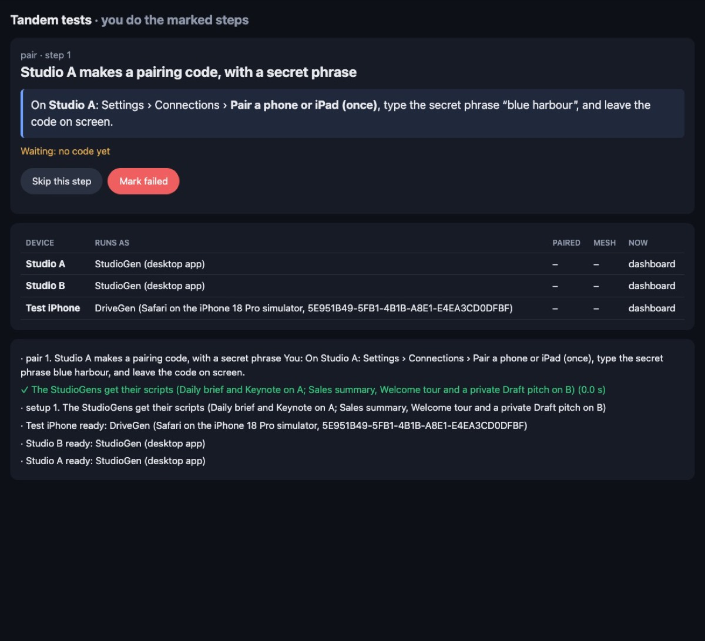
- The panel moves on by itself as soon as it sees the step happen in the apps. There's no “Done” button.
- Skip this step: when something can't be done right now. Mark failed: when you can see it went wrong.
- Steps marked “The runner does this one” or “Nothing to do: watching for it” need nothing from you.
- The device table shows, live: who each one is paired with (green dot = online), the mesh and how many members each sees online, the show step, and whether a direct link is up.
4. Doing a step: tap, talk or type
Most steps can be done three ways; pick whichever you're testing:
- Tap through the screens, as the panel describes (for example Mesh › Devices › Studio B › Remove).
- Talk: tap the mic (or Talk on the Assistant widget) and say the words in purple.
- Type the same words in the Assistant widget's new box and press Send. It goes through exactly the same commands as speech.
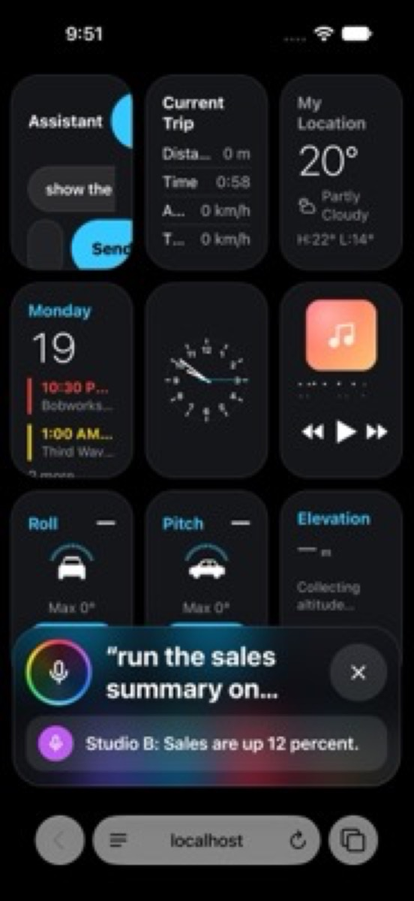
run the sales summary on studio b, typed, and Studio B's answer.
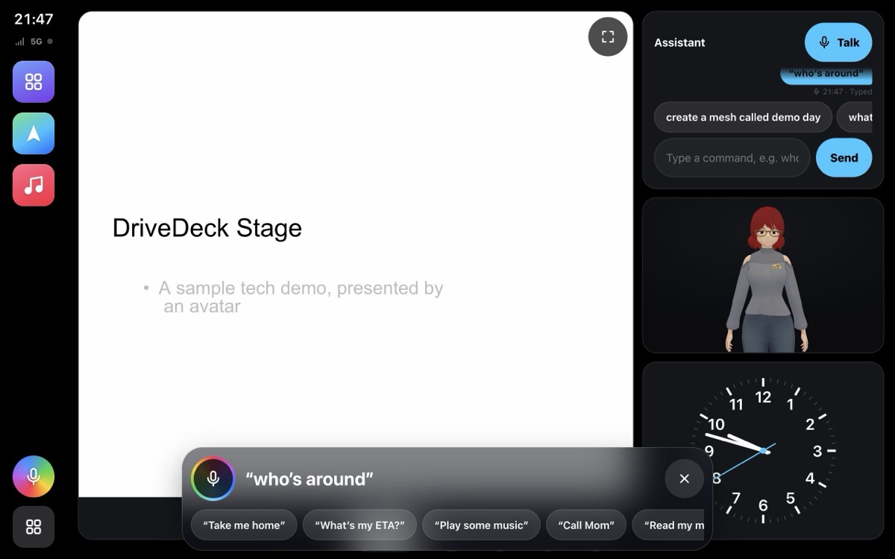
show the assistant widget); what you type and the answer also show in the panel at the bottom. Typing is turned off while the car is moving (when “hide while driving” is on); talking always works.
5. The journey, act by act
You marks what you do; the rest the runner does or just watches. Times are for an automatic run.
Setup (the runner, a few seconds)
Studio A gets the scripts Daily brief (offered to paired phones) and Keynote (three steps: it moves on by itself after the first, waits for a cue after the second). Studio B gets Sales summary (offered), Welcome tour (shared) and Draft pitch (private).
Act 1 · Pair at the desk
- You On Studio A: Settings › Connections › Pair a phone or iPad (once), secret phrase
blue harbour
. Or saypair a phone
. - You On Test iPhone: Settings › Connections › Pair once › No camera? Paste the code. The runner has put the code on the iPhone's clipboard: tap the box, Paste, Use this code, then type the phrase.
- You On Test iPhone:
test the connection
. Checked: at least one relay works. - The direct link comes up by itself (everything is on one Mac).
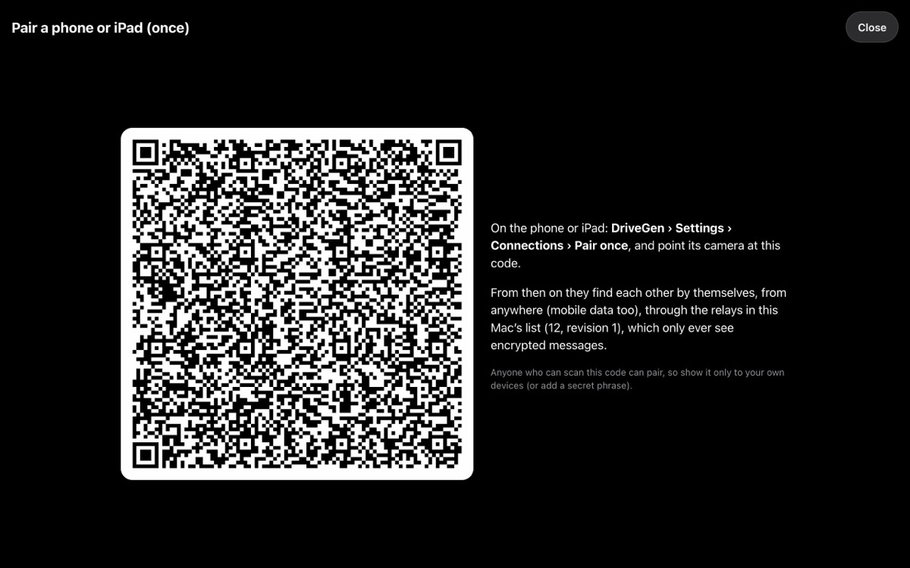
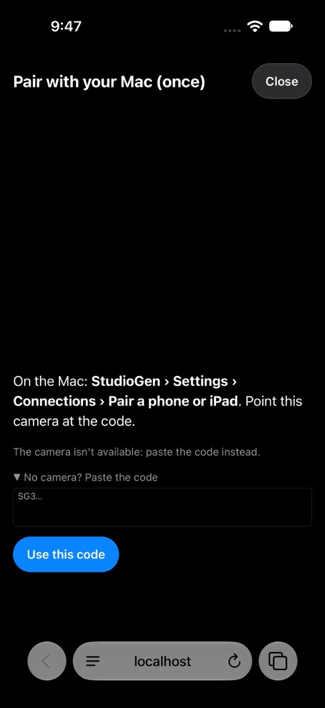
Act 2 · Build the mesh
- You On Studio A: Mesh › Create a mesh, “Demo day”. Or
create a mesh called Demo day
. - The phone joins by itself, because it's paired with Studio A.
- You On Studio A: Mesh › Invite (
invite to the mesh
), copy the text; on Studio B: Mesh › Join with an invite (join the mesh
), paste, Join. - You On Test iPhone:
who's around
. Checked: all three see each other online.
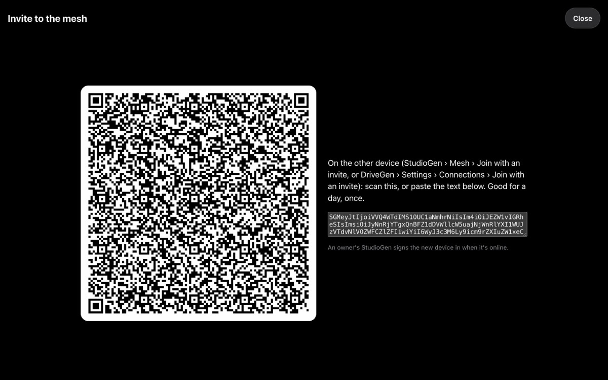
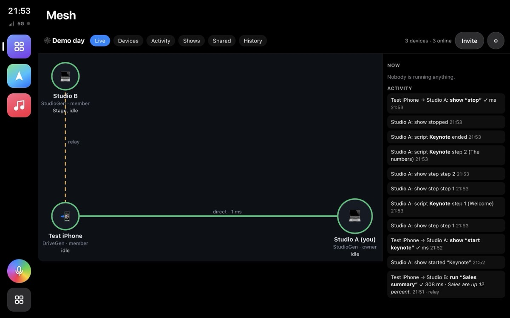
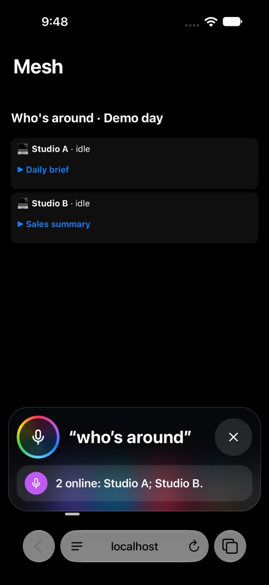
Act 3 · Shared things
- You On Studio A: Mesh › Shared (
what's shared
). Checked: Studio B's Welcome tour is listed, its private Draft pitch is not. - You On Studio A:
get the welcome tour from the mesh
(or Get in the list). Checked: it's now in Studio A's scripts. - You On Studio B:
share the draft pitch with the mesh
. Checked: Studio A now sees it.
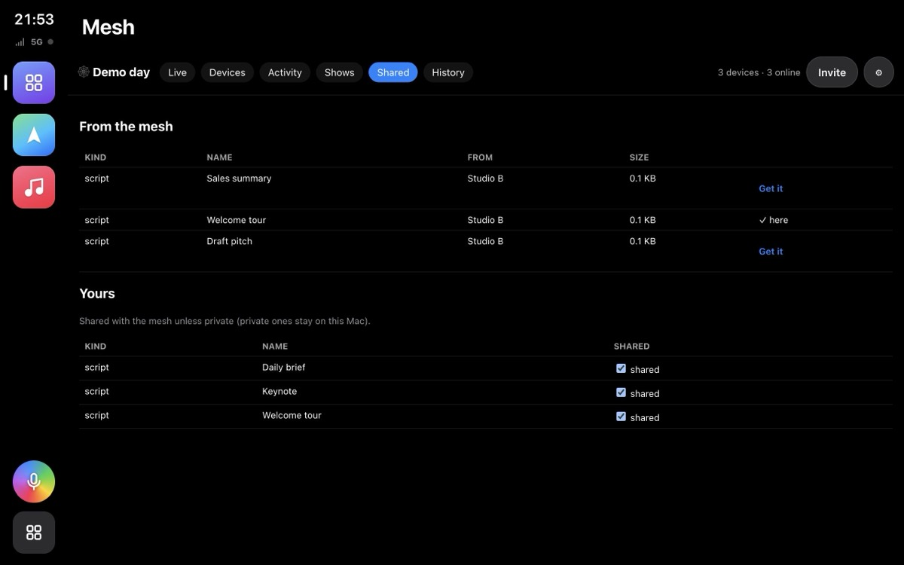
Act 4 · On the road (1:1 with the paired Mac)
- You On Test iPhone:
turn off the direct link
. Everything now goes through the relays, as on mobile data. - You On Test iPhone:
run the daily brief on my mac
. Checked: Studio A's answer (“Three meetings today…”) comes back to the phone. - Checked: Studio A's Mesh › Activity shows the request.
Act 5 · Ask the other Mac
- You On Test iPhone:
run the sales summary on studio b
(or Mesh › Who's around › Studio B › ▶ Sales summary). Checked: “Sales are up 12 percent.” Studio B isn't paired with the phone: this goes through the mesh. - You On Studio A:
don't let test iphone run scripts
(or Mesh › Devices › untick scripts). - You On Test iPhone: the same request again. Checked: refused, with a clear reason.
- You On Studio A:
allow test iphone to run scripts
.
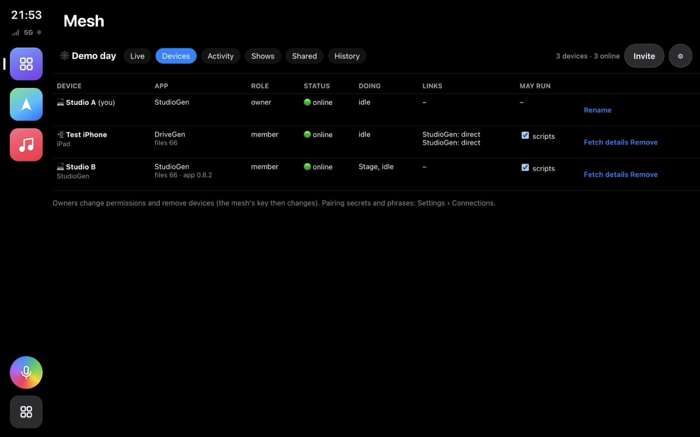
Act 6 · The show, from the phone
- You On Test iPhone:
start the keynote on all screens
. Studio A conducts; Studio B follows. - Studio A moves on by itself after the welcome. Checked: Studio B moves at the same moment (drift under 100 ms; usually a few).
- You On Test iPhone:
next slide everywhere
, thenstop the show
. - You On Test iPhone:
start the keynote in tandem
(each screen runs its own copy), thensend the cue
: Studio B, waiting at step two, moves on. Thenstop the show
.
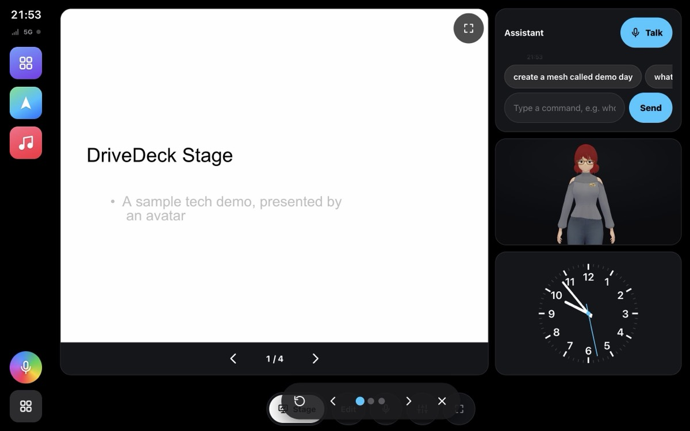
Act 7 · Things go wrong
- The runner puts a dead relay at the top of Studio A's list.
- You On Studio A:
share the relay list with the mesh
(Mesh › ⚙). Checked: Studio B and the phone get the new list. - You On Test iPhone:
run the sales summary on studio b
. Checked: still answered, with the dead relay first. - You Quit Studio B (⌘Q in its window). Checked: Studio A notices it's gone (within 90 seconds).
- The runner opens Studio B again. Checked: it's back in the mesh and online.
Act 8 · Housekeeping
- You On Studio A:
change the secret for test iphone
. Checked: a new key, no break. - You On Studio A:
remove studio b from the mesh
. Checked: two members left; the phone carries on with the new mesh key, Studio B doesn't have it.
Act 9 · Review
- You On Studio A:
show me the mesh
› History (and Activity: search “may not”). Checked: the history holds the run's requests, shows and shared things.export the mesh history
saves it as CSV.
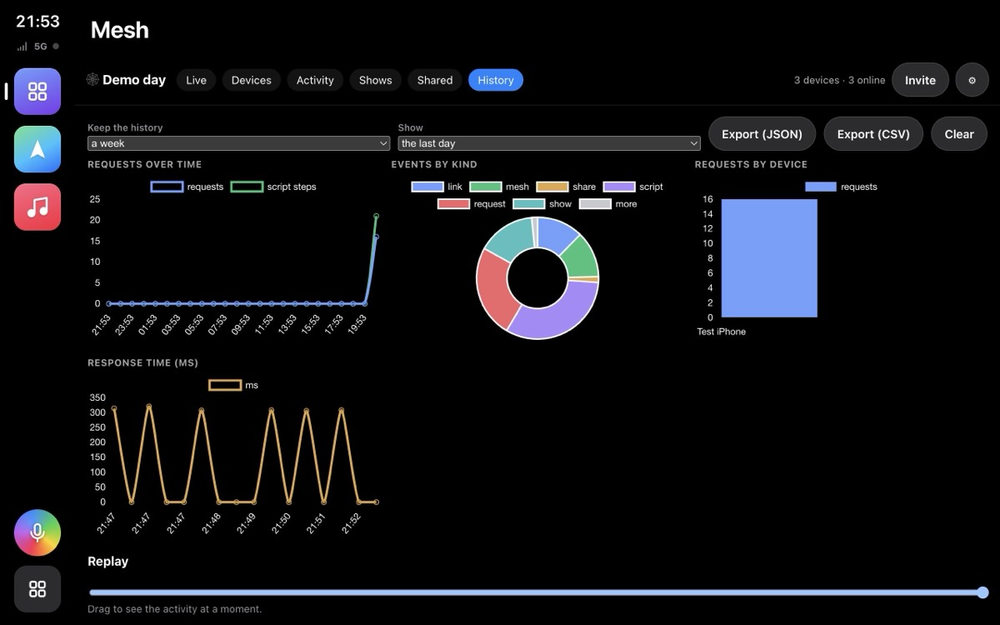
6. Results
At the end the panel shows how many steps passed, failed or were skipped. Everything is saved in tests/tandem/out/<date-time>/:
report.json: every step, passed / failed / skipped, how long it took, and for a failure what the runner was still waiting for.- A screenshot of every device after every step, named
act-step-device.jpg(a = Studio A, b = Studio B, p = Test iPhone).
7. Commands you can say or type
These work in both apps, by voice or in the Assistant's box, in the journey or any time. Settings › Voice commands lists them all (group Mesh and Your Mac) and lets you add your own words.
| What | Say or type, for example | Where |
|---|---|---|
| Who's in the mesh, online, doing what | who's around, show me the mesh | both |
| Create / invite / join / leave | create a mesh called Demo day, invite to the mesh, join the mesh, leave the mesh | create: StudioGen |
| Remove a device (owner) | remove studio b from the mesh | StudioGen |
| Permissions (owner) | don't let test iphone run scripts, allow test iphone to run scripts | StudioGen |
| Run on the paired Mac | run the daily brief on my mac | DriveGen |
| Run on any device in the mesh | run the sales summary on studio b | both |
| Shared things | what's shared, get the welcome tour from the mesh, share the draft with the mesh, make the draft private | share: StudioGen |
| Shows | start the keynote on all screens, start the keynote in tandem, next slide everywhere, previous slide everywhere, send the cue, stop the show | both |
| Relay list (owner) | share the relay list with the mesh | StudioGen |
| History | export the mesh history | StudioGen |
| Pairing and the link | pair a phone/ pair with my mac, test the connection, turn off the direct link, turn on the direct link | both |
| Secrets | change the secret for test iphone, change all the secrets | StudioGen |
8. iPhone simulators by hand
For trying DriveGen on iPhones yourself (the runner doesn't need this; it starts one when needed):
tests/tandem/sims.sh start 2 # two iPhones, shown in DeviceHub, opening DriveGen online tests/tandem/sims.sh start 1 http://localhost:8000/index.html # your local copy instead tests/tandem/sims.sh open https://vchahalibm.github.io/CarPWA/ # a page on every running iPhone tests/tandem/sims.sh paste "SG3…" # put a code on every iPhone's clipboard tests/tandem/sims.sh shot ~/Desktop # screenshots of every iPhone tests/tandem/sims.sh list # which iPhones are installed and running tests/tandem/sims.sh stop # shut them all down
Without the script: open -a DeviceHub (in Xcode 27; earlier Xcodes: open -a Simulator), then xcrun simctl boot "iPhone 18 Pro" and xcrun simctl openurl booted https://vchahalibm.github.io/CarPWA/.
9. If something goes wrong
| What you see | What to do |
|---|---|
| A step waits for ever | Read the yellow “Waiting:” line: it says what the runner hasn't seen yet. Do the step again, or Skip. |
| “Address already in use” at the start | A run is still going (or was killed). pkill -f tests/tandem/run.mjs; pkill -f sg-tandem-, then start again. |
| The iPhone shows an old version of DriveGen | The runner reloads it once by itself. If not: tests/tandem/sims.sh open http://localhost:8822/index.html?tandem=p. |
| No simulator window | Open it yourself: open -a DeviceHub. The test still works without it, but you can't tap the iPhone. |
| The StudioGens speak out loud | They do in tandem runs (so you hear the show); --auto keeps them quiet. |
For developers: the journey's steps are in tests/tandem/journeys.mjs (add acts as features land); the runner is tests/tandem/run.mjs; the commands are MeshCmd in js/mesh.js, wired up in js/commands.js.
Design notes
How things were designed and decided: for building on the apps, not for using them.
- RequirementsEvery feature and its status
- RoadmapWhat comes next
- Chat, cards and watchersDesign
- Map watchersDesign
- The meshDesign
- Profiles and StudioGBeeDesign
- ConnectionsDesign
- Connection testsTest plan
- Script formatReference
- Agent tasksDesign
- Desktop updatesHow StudioGen updates
- MemoryDesign
- Conversation modeDesign